Full record-level data:
Bucket files:
Population and deaths:
COVID data published by Czech ministry of health: [https://onemocneni-aktualne.mzcr.cz/api/v2/covid-19]
Kirsch wrote: "Vaccines were randomly distributed for those wishing to get vaxxed. [...] People were not allowed to select which vaccines they got. [...] The randomization of which vaccine someone got created a perfect real-world randomized clinical trial where we could compute the mortality rates for 1 year after Dose 2 for the two most popular vaccines." [https://github.com/skirsch/Czech]
However I didn't find any source which said that the vaccines were actually allocated randomly in the Czech Republic.
In the FOIA record-level the average year of birth is about 1973 for people whose vaccine type for the second dose was "Comirnaty" (Pfizer) but about 1966 for "SPIKEVAX" (Moderna), which indicates that the vaccine types were not allocated randomly. And there's also about 6 million people whose second vaccine type was Comirnaty but only about 500,000 people whose second vaccine type was Spikevax:
> system("curl -Ls https://github.com/skirsch/Czech/raw/main/data/CR_records.csv.xz|xz -dc>CR_records.csv")
> rec=data.table::fread("CR_records.csv")
> rec[,.(year=mean(Rok_narozeni),.N),.(type=OckovaciLatka_2)][order(year)]|>print(r=F)
type year N
VAXZEVRIA 1952.506 439705 # AstraZeneca
Valneva 1953.500 2
Comirnaty Omicron XBB.1.5. 1960.761 67
Nuvaxovid XBB 1.5 1964.500 2
SPIKEVAX 1965.842 517783 # Moderna
COVID-19 Vaccine Janssen 1969.026 271
Covovax 1971.517 29
Comirnaty 1972.682 5519975 # Pfizer
Comirnaty Original/Omicron BA.4/BA.5 1973.527 300
Sinovac 1974.657 178
Comirnaty Original/Omicron BA.1 1976.048 230
Sinopharm 1979.538 39
Nuvaxovid 1980.135 5098
Sputnik V 1981.300 10
Spikevax bivalent Original/Omicron BA.1 1981.375 16
Covishield 1984.713 94
1989.098 4544448 # people with no second dose listed
COVAXIN 1990.500 4
SPIKEVAX BIVALENT ORIGINAL/OMICRON BA.4-5 1992.000 2
Comirnaty Omicron XBB.1.5. 5-11 2017.000 2
Comirnaty 6m-4 2019.902 92
COMIRNATY OMICRON XBB.1.5 6m-4 2020.840 25
type year N
Kirsch included these comments in the file Pfizer v. Moderna mortality by age.xlsx:
A Simpson's paradox example here that really surprised us
There is a really interesting simpson's paradox due to ratios. For each individual age, the MRR (mortality rate ratio) rarely go above 2.25. Yet when you divide the CMR for Moderna/Pfizer, you get 2.25.
You can see this in the calculation on the Combined but skip tab at the bottom.
But of course our result isn't a simpson's paradox because we computed the CMR ratios by single digit age groups and five year brackets and plotted it.
However people who received a Moderna vaccine were older on average than people who received a Pfizer vaccine, which explains why Kirsch's ratio is higher for all ages aggregated together than for individual age groups.
The following code generates a file for deaths and person-days grouped by ongoing month, month of vaccination, weeks since vaccination, single year of age, dose number, and vaccine type.
The record-level data only has a year of birth for each person but not a date of birth, so here I generated a random date of birth for each person.
library(data.table)
# unique apply (faster for a long vector with many repeated values)
ua=\(x,fun,...){u=unique(x);fun(u,...)[match(x,u)]}
# fast way to get the floored number of years between dates after 1900 and before 2100
age=\(x,y){class(x)=class(y)=NULL;(y-x-(y-789)%/%1461+(x-789)%/%1461)%/%365}
mindate=as.Date("2020-1-1");maxdate=as.Date("2022-12-31")
rec=fread("Czech/data/CR_records.csv")
t=rec[,.(id=1:.N,death=DatumUmrti)]
set.seed(0);t$birth=ua(paste0(rec$Rok_narozeni,"-1-1")),as.Date)+sample(0:364,nrow(t),T)
t=t[rep(1:nrow(t),8),]
t$dose=rep(0:7,each=nrow(rec))
t$date=c(rep(mindate,nrow(rec)),rec[,`class<-`(unlist(.SD,,F),"Date"),.SDcols=paste0("Datum_",1:7)])
t$type=c(rep("",nrow(rec)),rec[,unlist(.SD,,F),.SDcols=paste0("OckovaciLatka_",1:7)])
t=t[!is.na(date)][date<=maxdate][order(-date)]
t$vaxmonth=ua(t$date,substr,1,7)
name1=c("Comirnaty","SPIKEVAX","VAXZEVRIA","COVID-19 Vaccine Janssen","")
name2=c("Pfizer","Moderna","AstraZeneca","Janssen","")
t$type=ifelse(t$type%in%name1,name2[match(t$type,name1)],"Other")
rm(rec) # free up memory so the script won't have to use swap
buck=data.table()
for(day in as.list(seq(mindate,maxdate,1))){
cat(as.character(day),"\n")
#buck=rbind(buck,t[date<=day&(is.na(death)|day<=death)&day>=birth][!(dose==0&id%in%id[dose>0])[ # keep under earlier doses
buck=rbind(buck,unique(t[date<=day&(is.na(death)|day<=death)&day>=birth],by="id")[ # remove under earlier doses
,.(month=substr(day,1,7),vaxmonth,week=ifelse(type=="",0,as.numeric(day-date)%/%7),
age=age(birth,day),dose,type,alive=1,dead=death==day)])[,.(
alive=sum(alive),dead=sum(dead,na.rm=T)),by=.(month,vaxmonth,week,age,dose,type)]
}
setorder(buck,month,vaxmonth,week,age,dose,type)
fwrite(buck,"czbuckets.csv",quote=F)
Here's different versions of the output produced by the script:
My code is similar to the buckets.py script provided by Kirsch except my code accounts for the aging of people over time correctly. In buckets.py each person has a constant age that is either the age on the day of death for people who died or the age on the day when the script was ran for people who didn't die (and in both cases the age is calculated incorrectly as a floored division of the age in days by 365). [https://github.com/skirsch/Czech/blob/main/code/buckets.py] So if for example the buckets.py script is ran in July 2024, the age of someone who was born in January 1950 and who didn't die is treated as 74 even during 2020.
Eurostat has yearly deaths and population estimates for Czech Republic by single year of age: https://ec.europa.eu/eurostat/data/database. The following code combines the two datasets into a more conveniently formatted single CSV file:
api="https://ec.europa.eu/eurostat/api/dissemination/sdmx/2.1/data/"
pop=read.table(paste0(api,"demo_pjan?format=TSV"),sep="\t",header=T,check.names=F,na.strings=":")
pop=pop[grep("^A,NR,(?!(TOTAL|UNK)).*,T,CZ",pop[,1],perl=T),]
age=c(as.numeric(head(sub(".*,Y(.*?),.*","\\1",pop[,1]),-2)),0,100)
flat=as.numeric(sub(":? *\\w?$","",unlist(pop[,-1])))
d1=data.frame(year=rep(as.numeric(colnames(pop)[-1]),each=nrow(pop)),age,pop=flat)
dead=read.table(paste0(api,"demo_magec?format=TSV"),sep="\t",header=T,check.names=F,na.strings=":")
dead=dead[grep(",T,(?!(TOTAL|UNK)).*,CZ",dead[,1],perl=T),]
age=c(as.numeric(head(sub(".*,Y(.*?),.*","\\1",dead[,1]),-2)),0,100)
flat=as.numeric(unlist(dead[,-1]))
d2=data.frame(year=rep(as.numeric(colnames(dead)[-1]),each=nrow(dead)),age,dead=flat)
me=merge(d1,d2)
me=me[order(me$year,me$age),]
write.csv(me,"czpopdead.csv",quote=F,row.names=F)
The output looks like this: [f/czpopdead.csv]
$ curl -Ls sars2.net/f/czpopdead.csv|sed 3q year,age,pop,dead 1960,0,126977,2581 1960,1,139022,222
In my CSV file age 100 means ages 100 and above. The population estimates are for January 1st and not mid-year estimates.
When I used Eurostat's data to calculate the yearly ASMR among the total population of the Czech Republic, it was about 1343 for 2021 and 1143 for 2022. My standard population was Eurostat's Czech population estimates for January 1st 2022:
> pop=read.csv("http://sars2.net/f/czpopdead.csv")
> std=pop$pop[pop$year==2022]
> asmr=tapply(pop$dead/pop$pop*std[pop$age+1]/sum(std)*1e5,pop$year,sum)
> round(tail(asmr))
2017 2018 2019 2020 2021 2022
1143 1134 1104 1244 1343 1143
In the record-level data unvaccinated people had an ASMR of about 2064 in 2021 and 1865 in 2022, but it might partially be because of the healthy vaccinee effect because people with 1 or 2 doses also had high ASMR in 2022:
> buck=fread("http://sars2.net/f/czbuckets.csv.gz")
> a=aggregate(buck[,4:5],list(year=substr(buck$month,1,4),dose=buck$dose,age=buck$age),sum)
> m=tapply(a$dead/a$alive*std[pmin(a$age,100)+1]/sum(std)*365e5,a[,1:2],sum,na.rm=T)
> round(m)
dose
year 0 1 2 3 4 5 6 7
2020 1245 0 0 NA NA NA NA NA
2021 2078 1068 885 610 4837 0 0 NA
2022 1875 2099 1773 889 866 2206 0 0
This shows the excess ASMR as percentage of ASMR the same year among the total Czech population:
> round((m/c(tail(asmr,4))-1)*100)
dose
year 0 1 2 3 4 5 6 7
2020 13 -100 -100 NA NA NA NA NA
2021 67 -3 -23 -55 289 -100 -100 NA
2022 40 69 60 -22 -36 77 -100 -100
In the code below I used a simplified but somewhat inaccurate method to calculate ASMR within the first 365 days from the first dose, so that I treated the age of each person as their year of birth subtracted from 2021, and I didn't remove people from the population size after they died. I only included people who got the first dose before 2022 so all people had at least 365 days of follow-up time to die after vaccination, since the record-level data only includes deaths up to the end of 2022.
I got about 32% higher ASMR for Moderna than Pfizer, but they were still both far below the ASMR of the total Czech population in 2021 and 2022:
> std=fread("http://sars2.net/f/czpopdead.csv")[year==2022,pop]
> system("curl -Ls https://github.com/skirsch/Czech/raw/main/data/CR_records.csv.xz|xz -dc>CR_records.csv")
> rec=fread("CR_records.csv")
> cmr=rec[Datum_1<as.Date("2022-1-1"),.(cmr=mean(!is.na(DatumUmrti)&DatumUmrti<Datum_1+365),.N),.(age=pmin(100,2021-Rok_narozeni),type=OckovaciLatka_1)]
> cmr[,.(asmr=sum(cmr*std[age+1]/sum(std)*1e5),N=sum(N)),type][order(-N)]
type asmr N
1: Comirnaty 787.3562 5461526 # Pfizer
2: SPIKEVAX 1028.3506 516562 # Moderna
3: VAXZEVRIA 978.4670 447437 # AstraZeneca
4: COVID-19 Vaccine Janssen 1325.4320 404824
5: Sinovac 0.0000 178
6: Covishield 0.0000 115
7: Sinopharm 0.0000 36
8: Covovax 0.0000 28
9: Sputnik V 0.0000 9
10: COVAXIN 0.0000 5
The output above shows that there's almost as many people whose first dose was Janssen as people whose first dose was Moderna, but I got a much higher ASMR for Janssen than Moderna.
Almost all people got the second vaccine from the same type as the first vaccine, except the schedule for the Janssen vaccine only included a single dose:
> rec[,.(type1=OckovaciLatka_1,type2=OckovaciLatka_2)][,.N,.(type1,type2)][order(-N)][1:16]
type1 type2 N
1: Comirnaty Comirnaty 5517414 # Pfizer
2: 4046219 # unvaccinated
3: SPIKEVAX SPIKEVAX 517152 # Moderna
4: VAXZEVRIA VAXZEVRIA 439653 # AstraZeneca
5: COVID-19 Vaccine Janssen 412314
6: Comirnaty 68726
7: SPIKEVAX 8467
8: VAXZEVRIA 5524
9: Nuvaxovid Nuvaxovid 5090
10: Comirnaty Omicron XBB.1.5. 1924
11: VAXZEVRIA Comirnaty 1801
12: SPIKEVAX Comirnaty 736
13: Comirnaty Original/Omicron BA.4/BA.5 665
14: VAXZEVRIA SPIKEVAX 329
15: Nuvaxovid 323
16: Comirnaty SPIKEVAX 300
Ther's many people who got a Janssen vaccine for the first dose but who later got a booster from another vaccine type, but their field for the second dose is blank and the booster is listed as the third dose:
> rec[,.(type1=OckovaciLatka_1,type2=OckovaciLatka_2,type3=OckovaciLatka_3)][grep("Jans",type1),.N,.(type1,type2,type3)][order(-N)]
type1 type2 type3 N
1: COVID-19 Vaccine Janssen 243484
2: COVID-19 Vaccine Janssen Comirnaty 123603
3: COVID-19 Vaccine Janssen SPIKEVAX 40641
4: COVID-19 Vaccine Janssen Comirnaty Original/Omicron BA.4/BA.5 1877
5: COVID-19 Vaccine Janssen COVID-19 Vaccine Janssen 1518
6: COVID-19 Vaccine Janssen Comirnaty Original/Omicron BA.1 599
7: COVID-19 Vaccine Janssen Comirnaty Omicron XBB.1.5. 436
8: COVID-19 Vaccine Janssen Spikevax bivalent Original/Omicron BA.1 70
9: COVID-19 Vaccine Janssen Nuvaxovid 66
10: COVID-19 Vaccine Janssen VAXZEVRIA 9
11: COVID-19 Vaccine Janssen Comirnaty Omicron XBB.1.5. 5-11 6
12: COVID-19 Vaccine Janssen SPIKEVAX BIVALENT ORIGINAL/OMICRON BA.4-5 4
13: COVID-19 Vaccine Janssen Nuvaxovid XBB 1.5 1
However the average date of first vaccination was much later for Janssen vaccines than for the other three most popular vaccine types:
> rec[,.(date=rec$Datum_1,type=rec$OckovaciLatka_1)][type!=""&type%in%type[rowid(type)==1e4]][,.(date=mean(date),.N),type][order(date)]
type date N
1: VAXZEVRIA 2021-04-02 447450 # AstraZeneca
2: SPIKEVAX 2021-05-29 526453 # Moderna
3: Comirnaty 2021-06-08 5586979 # Pfizer
4: COVID-19 Vaccine Janssen 2021-09-05 412314
And this shows that people who got a Pfizer or Moderna vaccine in late 2021 subsequently also had high ASMR over the next 365 days:
rec=fread("CR_records.csv")
std=fread("http://sars2.net/f/czpopdead.csv")[year==2022,pop]
rec2=rec[Datum_1<as.Date("2022-1-1")]
d=rec2[,.(dead=!is.na(DatumUmrti)&DatumUmrti<Datum_1+365,type=OckovaciLatka_1)]
d$age=pmin(100,2021-rec2$Rok_narozeni)
ua=\(x,fun,...){u=unique(x);fun(u,...)[match(x,u)]}
d$vaxmonth=ua(rec2$Datum_1,substr,1,7)
name1=c("Comirnaty","SPIKEVAX","VAXZEVRIA","COVID-19 Vaccine Janssen")
name2=c("Pfizer","Moderna","AstraZeneca","Janssen")
d$type=ifelse(d$type%in%name1,name2[match(d$type,name1)],"Other")
d$type=factor(d$type,names(sort(table(d$type),T)))
rate=d[,.(rate=mean(dead)),.(age=age,type=type,vaxmonth=vaxmonth)]
round(tapply(rate$rate*std[rate$age+1]/sum(std)*1e5,rate[,2:3],sum))
vaxmonth
type 2020-12 2021-01 2021-02 2021-03 2021-04 2021-05 2021-06
Pfizer 1461 1402 1369 740 868 823 1029
Moderna NA 3369 1952 975 927 1089 1231
AstraZeneca NA NA 1628 904 1061 1184 1676
Janssen NA NA NA 0 918 1089 1402
Other NA 0 0 0 0 0 0
vaxmonth
type 2021-07 2021-08 2021-09 2021-10 2021-11 2021-12
Pfizer 1067 1241 1639 1757 1499 1782
Moderna 1134 1204 1995 1647 1552 1882
AstraZeneca 1992 1985 470 96 0 0
Janssen 1340 1410 1569 1352 1422 1862
Other 0 0 0 0 0 0
In the plot below the ASMR of people with one dose shoots up when the second dose is rolled out, and the ASMR of people with two doses shoots up when the third dose is rolled out. Martin Neil and Norman Fenton speculated that a similar phenomenon in the English ONS data was explained by the so-called cheap trick, where people were categorized under the previous vaccine dose for a certain number of weeks after a new vaccine dose, so that for example a death that occured soon after the second dose would've been classified under the first dose. Jeffrey Morris said that the phenomenon was explained by the healthy vaccinee effect instead, because the healthy vaccinees who move under the nth dose have low mortality, it means that the so-called unhealthy stragglers who remain under dose n-1 will have increased mortality. However the same kind of a phenomenon can also be seen in the Czech data even though it doesn't employ the cheap trick, which makes it seem more likely that Morris was right and Neil and Fenton were wrong. And the New Zealand data released by Barry Young doesn't employ the cheap trick either but the same phenomenon can also be seen in Barry's data.
From the plot below you can also see that during a COVID wave in December 2021, unvaccinated people have a big spike in mortality but there is essentially no spike in mortality in people with 3 doses, and there is only a small spike in the black line which shows the mortality among all vaccinated people. People with 2 doses do have a big increase in mortality in December 2021, but it's probably not only because of COVID but also because a lot of people got the third dose in December 2021 so the unhealthy stragglers were left under the second dose:
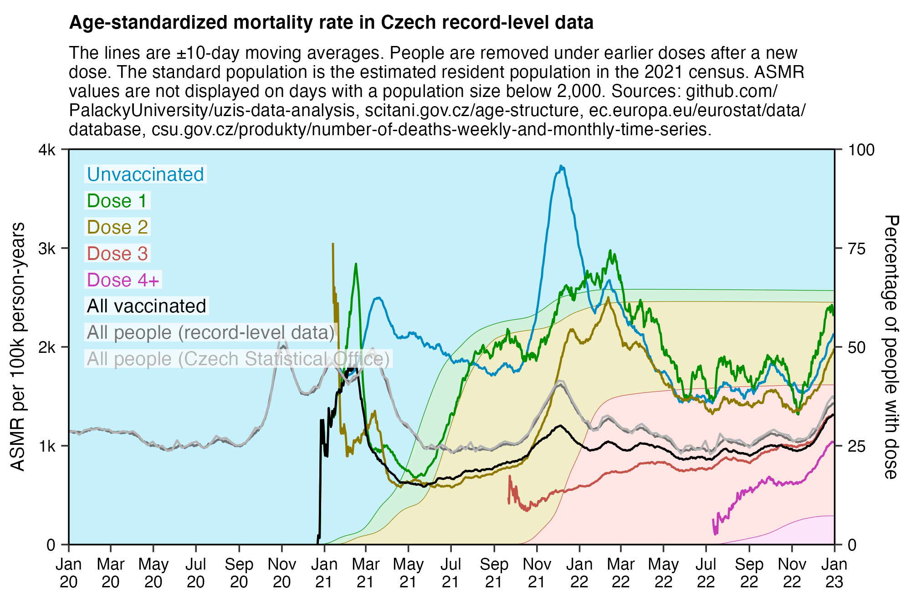
In the plot above the dark gray line shows the mortality rate among both vaccinated and unvaccinated people in the record-level data, and the light gray line shows the mortality rate based on the weekly number of deaths in 5-year age groups reported by the Czech Statistical Office combined with population estimates from Eurostat. [https://csu.gov.cz/produkty/number-of-deaths-weekly-and-monthly-time-series, https://ec.europa.eu/eurostat/data/database] The slight discrepancy between the lines might partially be because I used single-year age groups to calculate the dark gray line but I used 5-year age groups to calculate the light gray line.
library(data.table);library(ggplot2);library(stringr)
cutl=\(x,y)cut(x,c(y,Inf),y,T,F)
isoweek=\(year,week,weekday=1){d=as.Date(paste0(year,"-1-4"));d-(as.integer(format(d,"%w"))+6)%%7-1+7*(week-1)+weekday}
ma=\(x,b=1,f=b){x[]=rowMeans(embed(c(rep(NA,b),x,rep(NA,f)),f+b+1),na.rm=T);x}
dead=read.csv("http://sars2.net/f/czweeklydead.csv")
xstart=as.Date("2020-1-1");xend=as.Date("2022-12-31")
dates=seq(xstart,xend,1)
d=data.frame(date=dates,age=rep(unique(dead$age),each=length(dates)))
d$dead=c(sapply(split(dead,dead$age),\(x)approx(isoweek(x$year,x$week,4),x$dead/7,dates,rule=2)$y))
std=read.csv("http://sars2.net/f/czcensus2021pop.csv")[,2]
std2=tapply(std,pmin(0:100%/%5*5,90),sum)
pop=fread("http://sars2.net/f/czpopdead.csv")[year>=2010]
pop=aggregate(pop[,3,drop=F],list(year=pop$year,age=cutl(pop$age,unique(d$age))),sum)
d$pop=c(sapply(split(pop,pop$age),\(x)predict(smooth.spline(as.Date(paste0(x$year,"-1-1")),x$pop,spar=.1),as.numeric(dates))$y))
buck=fread("http://sars2.net/f/czbucketsdaily.csv.gz")
buck=buck[,.(alive=sum(alive),dead=sum(dead)),.(date,age=pmin(age,100),dose=ifelse(dose==0,"Unvaccinated",paste0("Dose ",ifelse(dose>=4,"4+",dose))))]
buck=rbind(buck,cbind(expand.grid(date=as.IDate(seq(xstart,xend,1)),age=0:100,dose=unique(buck$dose)),alive=0,dead=0))
buck=unique(buck,by=1:3)[order(dose,age,date)]
vax=cbind(buck[dose!="Unvaccinated",.(alive=sum(alive),dead=sum(dead)),.(age,date)],dose="All vaccinated")
all=cbind(buck[,.(alive=sum(alive),dead=sum(dead)),.(age,date)],dose="All people (record-level data)")
buck=rbind(buck,vax,all)
buck=buck[,.(date=date,alive=ma(alive,10),dead=ma(dead,10)),.(age,dose)]
xy=with(buck,aggregate(list(pop=alive,y=dead/alive*365e5*std[age+1]/sum(std)),list(x=date,z=dose),sum,na.rm=T))
cz=aggregate(list(y=d$dead/d$pop*365e5*std2[factor(d$age)]/sum(std2)),data.frame(x=d$date),sum)
xy=rbind(xy,cbind(cz,pop=NA,z="All people (Czech Statistical Office)"))
xy$z=factor(xy$z,unique(xy$z))
xy$y[xy$pop<2e3]=NA
xstart=as.Date("2020-1-1");xend=as.Date("2023-1-1")
yend=4000;ystep=1000;yend2=100;ystep2=25;secmult=yend/yend2
color=c(hcl(c(210,120,60,0,300)+15,90,50),"black","gray45","gray70")
fill=c(hcl(c(210,120,60,0,300)+15,80,70),"black","gray45","gray70")
label=data.frame(x=xstart+.02*(xend-xstart),y=seq(yend,,-yend/15,nlevels(xy$z))-yend/16,label=levels(xy$z))
xy2=xy[grep("Unvaccinated|Dose",xy$z),]
xy2$pct=99.99*xy2$pop/tapply(xy2$pop,xy2$x,sum,na.rm=T)[as.character(xy2$x)]
ggplot(xy2,aes(x,y))+
geom_area(aes(color=z,fill=z,y=pct*secmult),linewidth=.1,alpha=.22)+
geom_line(aes(color=z),linewidth=.4)+
geom_line(data=xy[grep("All vaccinated",xy$z),],color=color[6],linewidth=.4)+
geom_line(data=xy[grep("record-level",xy$z),],color=color[7],linewidth=.4)+
geom_line(data=xy[grep("Office",xy$z),],color=color[8],linewidth=.4)+
geom_hline(yintercept=c(0,yend),linewidth=.3,lineend="square")+
geom_vline(xintercept=c(xstart,xend),linewidth=.3,lineend="square")+
geom_label(data=label,aes(x=x,y=y,label=label),fill=alpha("white",.7),label.r=unit(0,"lines"),label.padding=unit(.1,"lines"),label.size=0,color=color[1:nrow(label)],size=2.7,hjust=0)+
labs(title="Age-standardized mortality rate in Czech record-level data (±10-day moving averages)",subtitle=str_wrap("People are removed under earlier doses after a new dose. The standard population is the estimated resident population in the 2021 census. ASMR values are not displayed on days with population size below 2,000. Sources: github.com/PalackyUniversity/uzis-data-analysis, scitani.gov.cz/age-structure, ec.europa.eu/eurostat/data/database, csu.gov.cz/produkty/number-of-deaths-weekly-and-monthly-time-series.",108),x=NULL,y="ASMR per 100k person-years")+
scale_x_date(limits=c(xstart,xend),breaks=seq(xstart,xend,"2 month"),date_labels="%b\n%y")+
scale_y_continuous(limits=c(0,yend),breaks=seq(0,yend,ystep),labels=\(x)ifelse(x==0,x,paste0(x/1e3,"k")),sec.axis=sec_axis(trans=~./secmult,breaks=seq(0,yend2,ystep2),name="Percentage of people with dose"))+
scale_color_manual(values=color)+
scale_fill_manual(values=fill)+
coord_cartesian(clip="off",expand=F)+
theme(axis.text=element_text(size=6.5,color="black"),
axis.ticks=element_line(linewidth=.3),
axis.ticks.length=unit(.18,"lines"),
axis.title=element_text(size=8),
legend.position="none",
panel.background=element_rect(fill="white"),
plot.margin=margin(.3,.3,.3,.3,"lines"),
plot.subtitle=element_text(size=6.8),
plot.title=element_text(size=8.2))
ggsave("1.png",width=5,height=3.3,dpi=400)
Kirsch included this comment in the file CR time series analysis.xlsx: "MR peaking 35 weeks after the shots #2 for male and female is hard for them to explain. It can't be HVE because HVE doesn't 'peak'."
For example in this plot the mortality rate peaks on week 30 after the second dose:
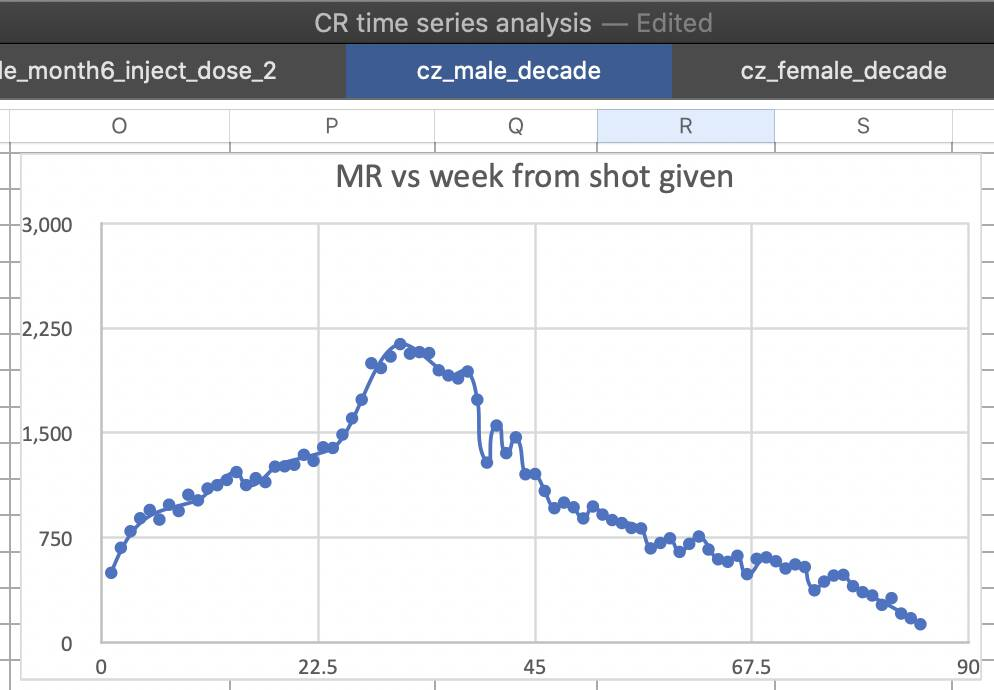
However it's because the mortality rate of people who remained under the second dose shot up when the third dose was rolled out, and people got the third dose about 30 weeks after the second dose on average:
> rec=fread("CR_records.csv")
> mean(rec$Datum_3-rec$Datum_2,na.rm=T)/7
[1] 29.6133
The average date of third doses is only about 26 weeks later than the average date of second doses:
> as.Date(mean(rec$Datum_2,na.rm=T)) [1] "2021-07-09" > as.Date(mean(rec$Datum_3,na.rm=T)) [1] "2022-01-04" > (mean(rec$Datum_3,na.rm=T)-mean(rec$Datum_2,na.rm=T))/7 [1] 25.57143
However people who got both the second and third dose got the second dose much earlier on average than people who only got the second dose (because younger people got vaccinated later and younger people were less likely to get a booster):
> as.Date(mean(rec$Datum_2[!is.na(rec$Datum_3)],na.rm=T)) [1] "2021-06-10" # average date of second dose for people who also got a third dose > as.Date(mean(rec$Datum_2[is.na(rec$Datum_3)],na.rm=T)) [1] "2021-08-31"" # average date of second dose for people who didn't get a third dose
Here for each combination of month and dose number, the expected number of deaths was derived by multiplying the number of person-days for each single year of age by the mortality rate that month of the same age among all people who are included in the dataset, and the results for each age were added together to get the baseline number of deaths among all ages.
For example in January 2021 the mortality rate of all people aged 70 in the dataset was about 9.734e-5 deaths per person-days, so the expected number of deaths was about 2.606 (from 9.734e-5*26871). So the excess mortality percent was about (2/2.606-1)*100 which is about -23%. When I repeated the same calculation for all ages, the expected number of deaths for all ages added together was about 523.6. But the actual number of deaths was 326, so the total excess mortality percent was about (326/523.6-1)*100 which is about -38%.
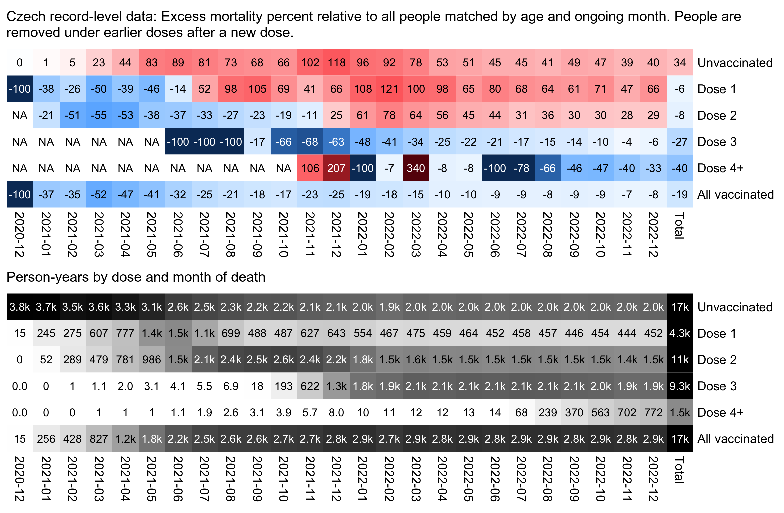
In the plot above the excess mortality of unvaccinated people peaks in December 2021 when there was a COVID wave. And conversely in December 2021 the excess mortality of the "All vaccinated" group is also lower than in the surrounding months.
In the plot above I used a different baseline for each month, so the excess mortality rates were adjusted for seasonal variation in mortality and the effect of COVID waves. But in the next plot I'm using the total mortality rate in 2021-2022 as the baseline throughout the plot, which increases the excess mortality percentages during the COVID wave in December 2021:
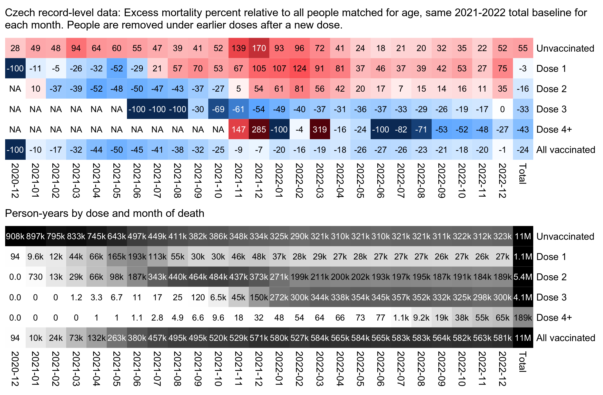
In the plot above unvaccinated people have 174% excess mortality in December 2021 but 43% in September 2021, so it's an approximately 1.92-fold increase in mortality (from (173.53+100)/(42.68+100)). But vaccinated people only have an approximately 1.54-fold increase in mortality when December 2021 is compared to September 2021 (from (5.46+100)/(-31.64+100)). In the US Medicare data that Kirsch published in 2023, the spikes in deaths during COVID waves were also bigger in unvaccinated people than vaccinated people.
library(data.table)
b=fread("http://sars2.net/f/czbuckets.csv.gz",showProgress=F)[month>="2020-12"]
b=b[,.(alive=sum(alive),dead=sum(dead)),by=.(month,age,dose=ifelse(dose==0,"Unvaccinated",paste0("Dose ",ifelse(dose>=4,"4+",dose))))]
b=rbind(b,b[,.(alive=sum(alive),dead=sum(dead),month="Total"),.(age,dose)])
me=merge(b,b[,.(base=sum(dead)/sum(alive)),.(age,month)]) # different baseline for each month
# me=merge(b,b[,.(base=sum(dead)/sum(alive)),age]) # use 2021-2022 total as baseline for each month
a=me[,base:=base*alive][,.(alive=sum(alive),dead=sum(dead),base=sum(base)),.(month,dose)]
a=rbind(a,a[dose!="Unvaccinated"][,.(alive=sum(alive),dead=sum(dead),base=sum(base),dose="All vaccinated"),month])
a$dose=factor(a$dose,c("Unvaccinated",paste0("Dose ",1:3),"Dose 4+","All vaccinated"))
mpop=xtabs(alive~dose+month,a)/365
m=tapply(with(a,(dead-base)/ifelse(dead>base,base,dead)*100),a[,2:1],c)
disp=tapply(100*(a$dead/a$base-1),a[,2:1],round)
hide=mpop<10;m[hide]=disp[hide]=NA
exp=.8;m=abs(m)^exp*sign(m)
maxcolor=300^exp;m[is.infinite(m)]=-maxcolor
pheatmap::pheatmap(m,filename="i1.png",display_numbers=disp,
cluster_rows=F,cluster_cols=F,legend=F,cellwidth=19,cellheight=19,fontsize=9,fontsize_number=8,
border_color=NA,na_col="white",
number_color=ifelse((abs(m)>.55*maxcolor)&!is.na(m),"white","black"),
breaks=seq(-maxcolor,maxcolor,,256),
colorRampPalette(hsv(rep(c(7/12,0),4:3),c(.9,.75,.6,.3,0,.3,.6,.75,.9),c(.4,.65,1,1,1,1,1,.65,.4)))(256))
exp2=.6;mpop=mpop^exp2;maxcolor2=max(mpop[-nrow(m),-ncol(m)])
kimi=\(x){e=floor(log10(ifelse(x==0,1,abs(x))));e2=pmax(e,0)%/%3+1;p=!is.na(x)
x[p]=paste0(sprintf(paste0("%.",ifelse(e[p]%%3==0,1,0),"f"),x[p]/1e3^(e2[p]-1)),c("","k","M","B","T")[e2[p]]);x}
pheatmap::pheatmap(mpop,filename="i2.png",display_numbers=kimi(mpop),
cluster_rows=F,cluster_cols=F,legend=F,cellwidth=19,cellheight=19,fontsize=9,fontsize_number=8,
border_color=NA,na_col="white",
number_color=ifelse(mpop>maxcolor2*.45,"white","black"),
breaks=seq(0,maxcolor2,,256),
sapply(seq(1,0,,256),\(i)rgb(i,i,i)))
system("w=`identify -format %w i1.png`;pad=38;convert -gravity northwest -pointsize 42 -font Arial \\( -splice x24 -size $[w-pad]x caption:'Czech record-level data: Excess mortality percent relative to all people matched for age, different baseline for each month. People are removed under earlier doses after a new dose.' -extent $[w-pad]x -gravity center \\) i1.png -gravity northwest \\( -size $[w-40]x caption:'Person-years by dose and month of death' -extent $[w-pad]x -gravity center \\) i2.png -append 1.png")
In the New Zealand data released by Barry Young, I noticed an effect where people who got vacinated during the early part of the main vaccine rollout subsequently had lower excess mortality than people who got vaccinated later on, which I called the "early vaccinee effect". I later also noticed a similar effect in a May 2024 FOI response to Clare Craig, which showed the number of deaths in England by week of vaccination, month of death, and age group: statistic.html#Clare_Craig_May_2024_UKHSA_FOI_response_for_deaths_in_vaccinated_people.
A similar early vaccinee effect is also visible in the Czech data. The monthly number of first doses given peaked in May 2021, so people who got the first vaccine dose during February to May 2021 subsequently had the lowest excess mortality, but people who got vaccinated in June 2021 already had close to 0% excess mortality, and the excess mortality gradually increased to over 100% in people who waited until 2022 to get the first dose:
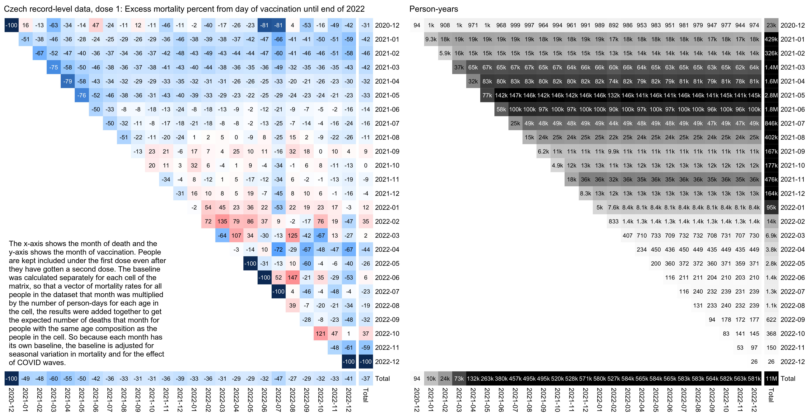
library(data.table)
buck=fread("http://sars2.net/f/czbucketskeep.csv.gz")[month>="2020-12"&dose<=1]
buck=buck[,.(dead=sum(dead),alive=as.numeric(sum(alive))),.(age,month,vaxmonth,dose)]
me=merge(buck[dose==1][,dose:=NULL],buck[,.(rate=sum(dead)/sum(alive)),.(age,month)])
me=me[,.(dead=sum(dead),alive=sum(alive),base=sum(alive*rate)),.(age,month,vaxmonth)]
me=rbind(me,me[,.(dead=sum(dead),alive=sum(alive),base=sum(base),month="Total"),.(age,vaxmonth)])
me=rbind(me,me[,.(dead=sum(dead),alive=sum(alive),base=sum(base),vaxmonth="Total"),.(age,month)])
a=me[,.(dead=sum(dead),alive=sum(alive),base=sum(base)),.(month,vaxmonth)]
mpop=xtabs(alive~vaxmonth+month,a)/365
disp=with(a,tapply((dead/base-1)*100,list(vaxmonth,month),round))
m=with(a,tapply((dead-base)*100/ifelse(dead>base,base,dead),list(vaxmonth,month),c))
hide=mpop<10;m[hide]=disp[hide]=NA
disp[lower.tri(disp)&row(disp)!=nrow(disp)]=""
exp=.8;m=abs(m)^exp*sign(m)
maxcolor=300^exp;m[is.infinite(m)]=-maxcolor
pheatmap::pheatmap(m,filename="mort.png",display_numbers=disp,
gaps_col=ncol(m)-1,gaps_row=nrow(m)-1,
cluster_rows=F,cluster_cols=F,legend=F,
cellwidth=19,cellheight=19,fontsize=9,fontsize_number=8,border_color=NA,na_col="white",
number_color=ifelse(!is.na(m)&abs(m)>.5*maxcolor,"white","black"),
breaks=seq(-maxcolor,maxcolor,,256),
colorRampPalette(hsv(rep(c(7/12,0),4:5),c(.9,.75,.6,.3,0,.3,.6,.75,.9),c(.4,.65,1,1,1,1,1,.65,.4)))(256))
kimi=\(x){e=floor(log10(ifelse(x==0,1,abs(x))));e2=pmax(e,0)%/%3+1
x[]=ifelse(abs(x)<10,round(x),paste0(round(x/1e3^(e2-1),ifelse(e%%3==0,1,0)),c("","k","M","B","T")[e2]));x}
disp2=kimi(mpop);disp2[lower.tri(disp2)&row(disp2)!=nrow(disp2)]=""
exp2=.6;mpop=mpop^exp2
maxcolor2=max(mpop[1:(nrow(mpop)-1),1:(ncol(mpop)-1)],na.rm=T)
pheatmap::pheatmap(mpop,filename="pop.png",display_numbers=disp2,
gaps_col=ncol(m)-1,gaps_row=nrow(m)-1,
cluster_rows=F,cluster_cols=F,legend=F,
cellwidth=19,cellheight=19,fontsize=9,fontsize_number=8,border_color=NA,na_col="white",
number_color=ifelse(!(is.na(mpop))&mpop>maxcolor2*.45,"white","black"),
breaks=seq(0,maxcolor2,,256),sapply(seq(1,0,,256),\(i)rgb(i,i,i)))
system("w=`identify -format %w mort.png`;pad=44;convert -gravity northwest -pointsize 46 -font Arial \\( -splice x24 -size $[w-pad]x caption:'Czech record-level data, dose 1: Excess mortality percent from day of vaccination until end of 2022' -extent $[w-pad]x -gravity center \\) mort.png -append l1.png;convert -pointsize 46 -font Arial -gravity northwest \\( -splice x24 -size $[w-40]x caption:'Person-years from day of vaccination until end of 2022' -extent $[w-pad]x -gravity center \\) pop.png -append l2.png;convert -gravity south l[12].png +append 0.png")
system("convert 0.png -fill black -gravity southwest -size 900x980 -pointsize 44 -font Arial caption:'The x-axis shows the month of death and the y-axis shows the month of vaccination. People are kept included under the first dose even after they have gotten a second dose. The baseline was calculated separately for each cell of the matrix, so that a vector of mortality rates for each age that month among all people in the record-level data was multiplied by a vector of person-days for each age in the cell, and the results were added together to get the expected number of deaths that month for people with the same age composition as the people in the cell. So because each month has its own baseline, the baseline is adjusted for seasonal variation in mortality and for the effect of COVID waves.' -gravity southwest -geometry +50+290 -composite 1.png")
The plot below shows excess mortality by the type of the first vaccine. People with two or more doses almost always got the second dose from the same vaccine type as the first dose, except Janssen vaccines only had a single dose so people who got a Janssen vaccine for the first dose often got a different type of vaccine for the booster.
The plot below shows that even in late 2022, people got a Moderna vaccine for the first dose had much higher excess mortality than people who got a Pfizer vaccine for the first dose. If the difference in mortality would be because of vaccine deaths like Kirsch says, you'd expect the difference to be greatest in the first few weeks or months after vaccination and get weaker over time. But because the difference remains in place more than a year after vaccination, it rather seems to be caused by some confounding factors which I didn't adjust for here:
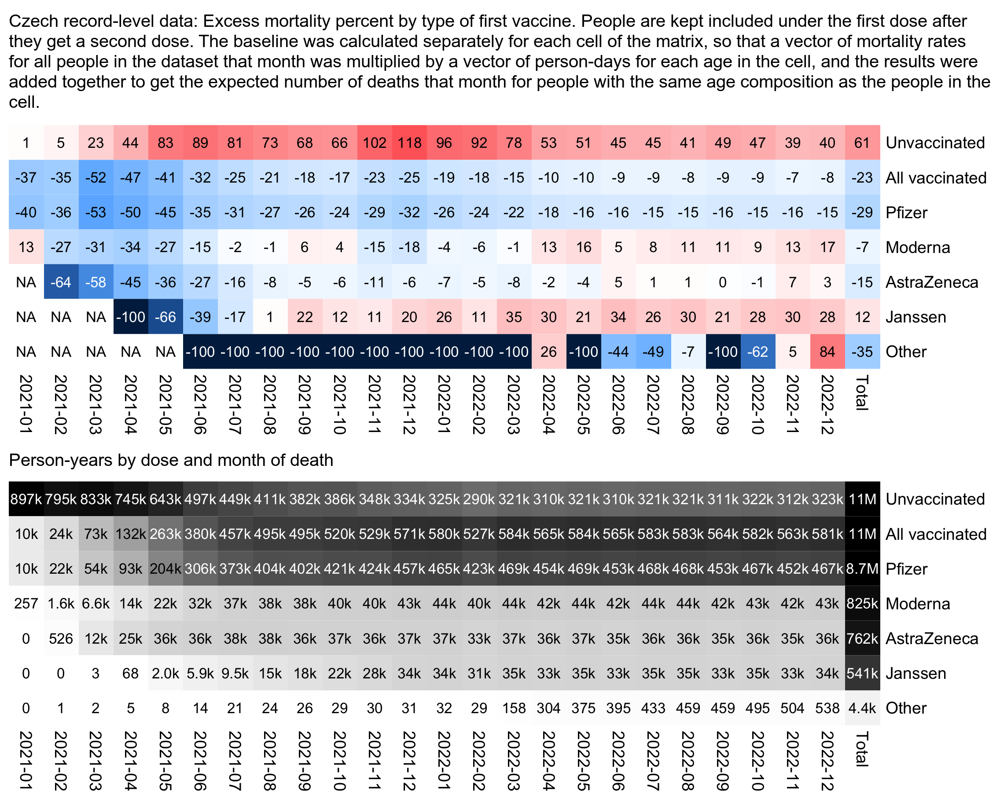
In the plot above Janssen vaccines get by far the highest excess mortality percentage, but it's probably because the average date of first vaccination is much later for Janssen vaccines than for the other three vaccine types, so the "late vaccinees" who got vaccinated in the second half of 2021 are overrepresented among the people who got a Janssen vaccine.
In the next plot the x-axis shows the month of vaccination and not the month of death, and the number in each cell is the excess mortality up to the end of 2022 and not the excess mortality on the month that is shown on the x-axis. The plot shows that people who got a Pfizer vaccine in late 2021 subsequently also had much higher excess mortality than people who got a Pfizer vaccine in the first half of 2021:
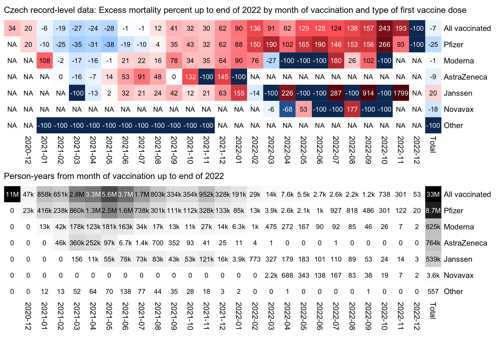
buck=data.table::fread("http://sars2.net/f/czbucketskeep.csv.gz")[month>="2020-12"&dose<=1][dose==0,type:="Unvaccinated"]
# first plot
buck=buck[,.(dead=sum(dead),alive=as.numeric(sum(alive))),.(age,month,type)]
me=merge(buck,buck[,.(base=sum(dead)/sum(alive)),by=.(age,month)])
me$base=me$base*me$alive
me=rbind(me,me[,.(dead=sum(dead),alive=sum(alive),base=sum(base),month="Total"),.(age,type)])
me=rbind(me,me[,.(dead=sum(dead),alive=sum(alive),base=sum(base),type="Total"),.(age,month)])
a=me[,.(dead=sum(dead),alive=sum(alive),base=sum(base)),.(type,month)]
a=rbind(a,a[type!="Unvaccinated"&type!="Total",.(dead=sum(dead),alive=sum(alive),base=sum(base),type="All vaccinated"),month])
# # second plot
# buck=buck[,.(dead=sum(dead),alive=as.numeric(sum(alive))),.(age,month,vaxmonth,type)]
# me=merge(buck,buck[,.(base=sum(dead)/sum(alive)),by=.(age,month)])[,base:=base*alive]
# me=rbind(me,me[,.(dead=sum(dead),alive=sum(alive),base=sum(base),vaxmonth="Total"),.(age,month,type)])
# me=rbind(me,me[,.(dead=sum(dead),alive=sum(alive),base=sum(base),type="Total"),.(age,month,vaxmonth)])
# a=me[vaxmonth!="2020-01",.(dead=sum(dead),alive=sum(alive),base=sum(base)),.(type,vaxmonth)]
# a=rbind(a,a[type!="Unvaccinated"&type!="Total",.(dead=sum(dead),alive=sum(alive),base=sum(base),type="All vaccinated"),vaxmonth])
a[,type:=factor(type,unique(c("All vaccinated","Unvaccinated",names(sort(tapply(alive,type,sum),T)))))]
mpop=xtabs(a$alive~a[[1]]+a[[2]])/365
m=tapply(with(a,(dead-base)/ifelse(dead>base,base,dead)*100),a[,1:2],c)
disp=tapply(100*(a$dead/a$base-1),a[,1:2],round)
m[mpop<10]=disp[mpop<10]=NA
exp=.8;m=abs(m)^exp*sign(m)
maxcolor=300^exp;m[is.infinite(m)]=-maxcolor
pheatmap::pheatmap(m,filename="i1.png",display_numbers=disp,
cluster_rows=F,cluster_cols=F,legend=F,cellwidth=19,cellheight=19,fontsize=9,fontsize_number=8,
border_color=NA,na_col="white",
number_color=ifelse((abs(m)>.55*maxcolor)&!is.na(m),"white","black"),
breaks=seq(-maxcolor,maxcolor,,256),
colorRampPalette(hsv(rep(c(7/12,0),5:4),c(1,.8,.6,.3,0,.3,.6,.8,1),c(.3,.65,rep(1,5),.65,.3)))(256))
kimi=\(x){e=floor(log10(ifelse(x==0,1,abs(x))));e2=pmax(e,0)%/%3+1
x[]=ifelse(abs(x)<1e3,round(x),paste0(sprintf(paste0("%.",ifelse(e%%3==0,1,0),"f"),x/1e3^(e2-1)),c("","k","M","B","T")[e2]));x}
exp2=.6;maxcolor2=max(mpop[-nrow(m),-ncol(m)])
pheatmap::pheatmap(mpop^exp2,filename="i2.png",display_numbers=kimi(mpop),
cluster_rows=F,cluster_cols=F,legend=F,cellwidth=19,cellheight=19,fontsize=9,fontsize_number=8,
border_color=NA,na_col="white",
number_color=ifelse(mpop^exp2>maxcolor2^exp2*.45,"white","black"),
breaks=seq(0,maxcolor2^exp2,,256),
sapply(seq(1,0,,256),\(i)rgb(i,i,i)))
The plot below is otherwise similar to the first plot except the baseline is the mortality among only unvaccinated people instead of both unvaccinated and vaccinated people. It shows that during the COVID wave in December 2021, people with a first dose from a Moderna vaccine had about 65% lower deaths than unvaccinated people matched by age (even though Kirsch was making it seem like people with a Moderna vaccine were dropping like flies):
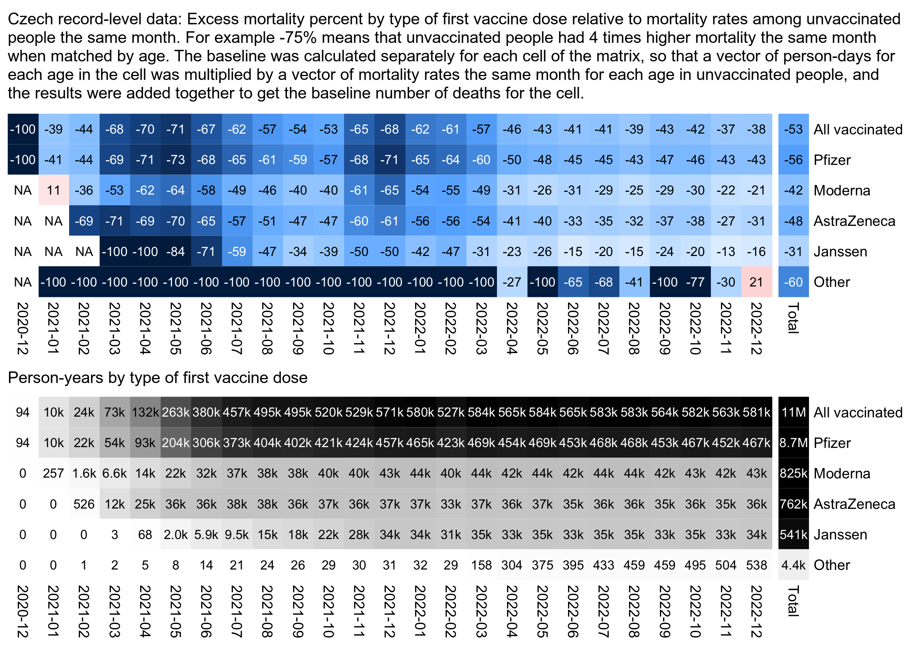
In 2023 Kirsch published a table of data from Medicare which showed the number of deaths by days since the COVID vaccine given in 2021 that was listed in the database, which was generally the first dose of each person. The table seems to have a bump in deaths about 20-30 days after vaccination, which I speculated might have been because of people who died soon after the second dose, because the second dose was often given about 3-4 weeks after the first dose: [https://kirschsubstack.com/p/game-over-medicare-data-shows-the#%C2%A7the-medicare-data-that-i-received]
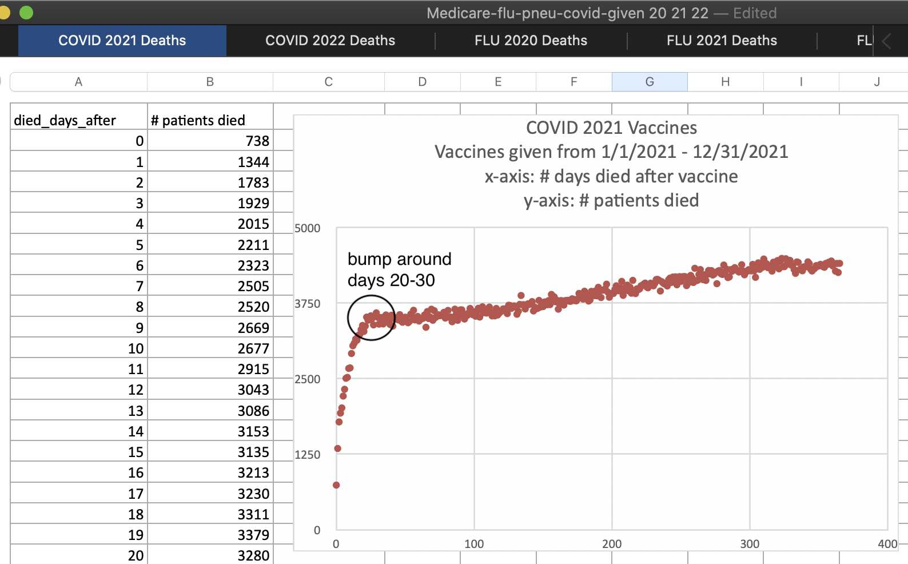
In the plot below the dark green line for the year 2021 shows the same data as the screenshot above. The dark green line seems to have a bump where it's temporarily elevated around day 25 from vaccination, but the red line for deaths in the year 2022 has a more smooth curve with no clear increase around day 25. I though it might have been because most of the doses given in 2022 were booster doses, and people didn't get a second booster dose right after the first booster, so in the scenario where the bump in the dark green line was caused by people dying from the second dose, the bump could've been missing from the red line because people didn't get the second booster soon after the first booster:
I noticed that the Czech data also seems to be a bump in deaths around weeks 2-4 after vaccination (where week 0 consists of the day of vaccination and the next 6 days):
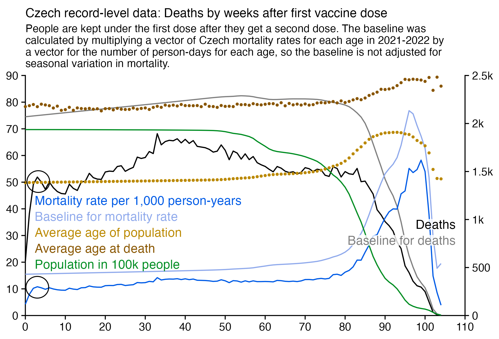
However in the plot above my baseline was not adjusted for seasonal variation in mortality, because I calculated the baseline based on the total mortality rate in 2021-2022 among all people who are included in the record-level data. In the plot below the dark gray baseline was calculated the same way as in the plot above. But if you look at the light gray baseline which is adjusted for seasonal variation in deaths and for the impact of COVID waves, there's a big fall in the baseline during the first 10 weeks after vaccination, which is because many people got vaccinated in the first quarter of 2021 when there was a large number of COVID deaths and there was also elevated mortality because it was winter:
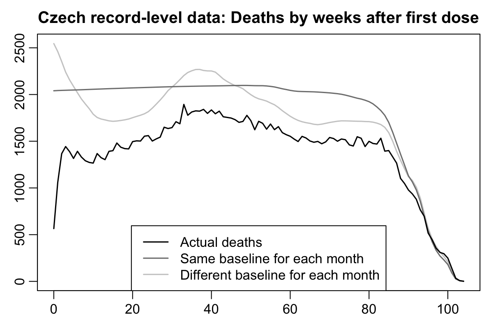
In the plot above if you compare the black line for deaths against the dark gray baseline that is not adjusted for seasonality, the period after vaccination that has clearly reduced mortality seems to last only about 2 weeks, which is surprisingly short compared to other datasets like Barry Young's data from New Zealand. But the period with reduced mortality is actually longer if you compare the black line against the light gray line instead, as you can see from this plot which shows the excess percentage of deaths relative to the baseline:
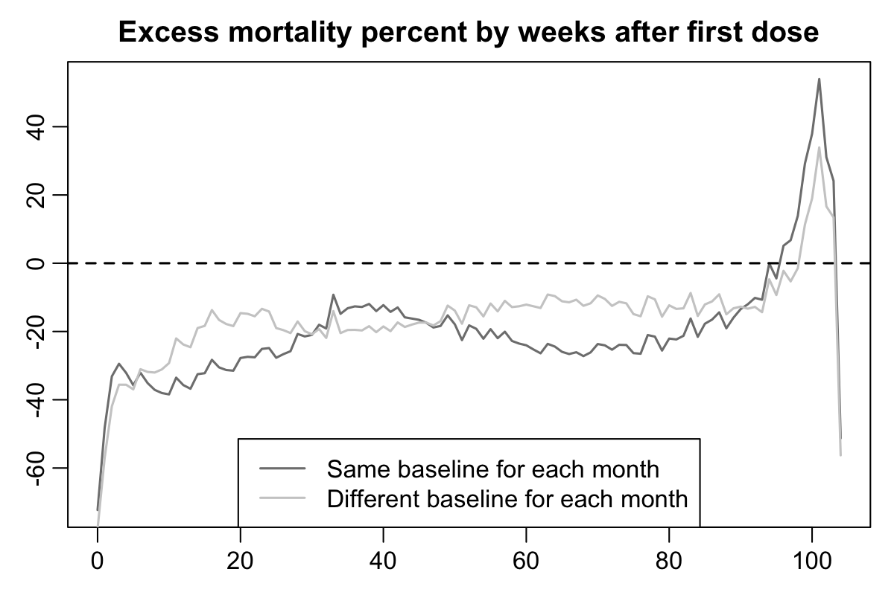
So I suspect the reason why the US Medicare data had a spike in deaths around days 20-30 might similarly be because many people received the first dose in January to February 2021 when there was a sharp spike in excess mortality in the United States, but by March 2021 the excess mortality had fallen close to zero.
Here's code for the second plot:
buck=fread("http://sars2.net/f/czbucketskeep.csv.gz")[dose<=1]
buck=buck[,.(dead=sum(dead),alive=sum(alive)),by=.(month,age,type,week)]
rate1=buck[,.(rate1=sum(dead)/sum(alive)),by=age]
rate2=buck[,.(rate2=sum(dead)/sum(alive)),by=.(month,age)]
me=merge(merge(buck,rate1),rate2,by=c("age","month"))[type!=""]
xy=me[,.(excess1=(sum(dead)/sum(rate1*alive)-1)*100,excess2=(sum(dead)/sum(rate2*alive)-1)*100),by=week]
xy=me[,.(dead=sum(dead),base1=sum(rate1*alive),base2=sum(rate2*alive)),by=week][order(week)]
png("1.png",1200,800,res=198)
par(mar=c(2.3,2.3,2.1,.8),mgp=c(0,.6,0))
tit="Czech record-level data: Deaths by weeks after first dose"
leg=c("Deaths","Same baseline for each month","Different baseline for each month")
col=c("black","gray50","gray80")
plot(xy$week,xy$base2,type="l",col=col[3],main=tit,xlab=NA,ylab=NA,lwd=1.5)
lines(xy$week,xy$base1,type="l",col=col[2],lwd=1.5)
lines(xy$week,xy$dead,type="l",col=col[1],lwd=1.5)
legend("bottom",legend=leg,col=col,lty=1,lwd=1.5)
dev.off()
And here's code for the first plot:
library(ggplot2);library(data.table)
ua=\(x,y,...){u=unique(x);y(u,...)[match(x,u)]}
bin=7;maxdate=as.Date("2022-12-31")
rec=fread("CR_records.csv",showProgress=F)
t=rec[,.(id=1:.N,death=DatumUmrti,date=Datum_1,type=OckovaciLatka_1,birth=Rok_narozeni)][!is.na(date)]
set.seed(0);t$birth=ua(ua(t$birth,paste0,"-1-1"),as.Date)+sample(0:364,nrow(t),T)
name1=c("Comirnaty","SPIKEVAX","VAXZEVRIA","COVID-19 Vaccine Janssen")
name2=c("Pfizer","Moderna","AstraZeneca","Janssen")
t=t[!is.na(date)&type%in%name1][,type:=name2[match(type,name1)]]
age=as.numeric(t$date-t$birth)/365.25
dead=t[!is.na(t$death)]
deadbin=(as.numeric(dead$death)-as.numeric(dead$date))%/%bin
endbin=(as.numeric(maxdate)-as.numeric(t$date))%/%bin
cmr=fread("http://sars2.net/f/czpopdead.csv")[year%in%2021:2022,.(sum(dead)/sum(pop)*1e5),age][[2]]
bins=0:max(endbin)
pop=rev(cumsum(rev(table(factor(endbin,bins)))))*bin
baseline=sapply(bins,\(i)mean(cmr[pmin(100,floor(age[i<=endbin]+i*bin/365))+1]))
xy=data.frame(bin=bins,baseline,pop)
xy$dead=as.numeric(table(factor(deadbin,xy$bin)))
xy$cmr=xy$dead/xy$pop*1e5*365
xy$age=sapply(bins,\(i)mean(age[i<=endbin]))+xy$bin*bin/365
deadage=(as.numeric(dead$death)-as.numeric(dead$birth))/365.25
xy$deadage=tapply(deadage,factor(deadbin,xy$bin),mean)+xy$bin*bin/365
xy$deadbase=xy$baseline*xy$pop/1e5/365
xy$cmr[xy$pop<3e4]=NA
lab=read.csv(row.names=1,text="name,title
cmr,\"Mortality rate per 1,000 person-years\"
baseline,Baseline for mortality rate
dead,Deaths
deadbase,Baseline for deaths
age,Average age of population
deadage,Average age at death
pop,Population in 100k people")
lab$color=c(hcl(255,120,40),hcl(255,60,70),"black","gray50",hcl(60,90,60),hcl(60,110,40),hcl(135,80,50))
lab1=strsplit("cmr,baseline,age,deadage,pop",",")[[1]]
lab2=strsplit("dead,deadbase",",")[[1]]
lab$mult=1
lab["pop",]$mult=1/1e5/7
lab["baseline",]$mult=lab["cmr",]$mult=1/100
cand=c(sapply(c(1,2,5),\(x)x*10^c(-10:10)))
ymax=max(t(t(xy[,lab1])*lab[lab1,]$mult),na.rm=T)
ystep=cand[which.min(abs(cand-ymax/6))]
yend=ystep*ceiling(ymax/ystep)
xstep=cand[which.min(abs(cand-max(xy$bin)/9))]
xend=xstep*ceiling(max(xy$bin)/xstep)
xbreak=seq(0,xend,xstep);ybreak=seq(0,yend,ystep)
ymax2=max(t(t(xy[,lab2])*lab[lab2,]$mult),na.rm=T)
ystep2=cand[which.min(abs(cand-ymax2/6))]
yend2=ceiling(ymax2/ystep2)*ystep2
secmult=yend/yend2
legh=.38;legstep=15
legy1=rev(seq(0,,yend/legstep,length(lab1)))+(legh-length(lab1)/legstep/2)*yend
legy2=rev(seq(0,,yend/legstep,length(lab2)))+(legh-length(lab2)/legstep/2)*yend
leg1=data.frame(x=.02*xend,y=legy1,label=lab[lab1,]$title,color=lab[lab1,]$color)
leg2=data.frame(x=.98*xend,y=legy2,label=lab[lab2,]$title,color=lab[lab2,]$color)
lab$mult=lab$mult*ifelse(rownames(lab)%in%lab2,secmult,1)
xy2=as.data.frame(t(t(xy)*c(1,lab[names(xy)[-1],]$mult)))
kimi=\(x)ifelse(abs(x)>=1e6,paste0(x/1e6,"M"),ifelse(abs(x)>=1e3,paste0(x/1e3,"k"),x))
ggplot(xy2,aes(x=bin))+
geom_hline(yintercept=0,linewidth=.35,lineend="square")+
geom_vline(xintercept=c(0,xend),linewidth=.35,lineend="square")+
geom_line(aes(y=dead),linewidth=.4,color=lab["dead",]$color)+
geom_line(aes(y=deadbase),linewidth=.4,color=lab["deadbase",]$color)+
geom_line(aes(y=cmr),linewidth=.4,color=lab["cmr",]$color)+
geom_line(aes(y=baseline),linewidth=.4,color=lab["baseline",]$color)+
geom_line(aes(y=pop),linewidth=.4,color=lab["pop",]$color)+
geom_point(aes(y=age),size=.4,color=lab["age",]$color)+
geom_point(aes(y=deadage),size=.4,color=lab["deadage",]$color)+
geom_label(data=leg1,aes(x=x,y=y,label=label),fill=alpha("white",.8),label.r=unit(0,"lines"),label.padding=unit(.04,"lines"),label.size=0,size=3.2,hjust=0,vjust=.5,color=leg1$color)+
geom_label(data=leg2,aes(x=x,y=y,label=label),fill=alpha("white",.8),label.r=unit(0,"lines"),label.padding=unit(.04,"lines"),label.size=0,size=3.2,hjust=1,vjust=.5,color=leg2$color)+
labs(x=NULL,y="",title="Czech record-level data: Deaths by weeks after first vaccine dose",subtitle="People are kept under the first dose after they get a second dose. The baseline was calculated by multiplying a vector of Czech mortality rates for each age in 2021-2022 by a vector for the number of person-days for each age, so the baseline is not adjusted for seasonal variation in mortality."|>stringr::str_wrap(90))+
coord_cartesian(clip="off",expand=F)+
scale_x_continuous(limits=c(0,xend),breaks=xbreak)+
scale_y_continuous(limits=c(0,yend),breaks=ybreak,label=kimi,sec.axis=sec_axis(trans=~./secmult,breaks=seq(0,yend2,ystep2),label=kimi))+
theme(axis.text=element_text(size=8,color="black"),
axis.ticks=element_line(linewidth=.35,color="black"),
axis.ticks.length=unit(.2,"lines"),
axis.title=element_blank(),
axis.title.y.right=element_text(margin=margin(0,0,0,5)),
legend.position="none",
panel.background=element_rect(fill="white"),
panel.grid=element_blank(),
plot.margin=margin(.3,.3,.3,.3,"lines"),
plot.subtitle=element_text(size=7.8,margin=margin(0,0,.6,0,"lines")),
plot.title=element_text(size=9,margin=margin(.2,0,.4,0,"lines")))
ggsave("1.png",width=5,height=3.4,dpi=400)
The Czech Statistical Office has published weekly data for deaths by 5-year age groups: https://vdb.czso.cz/vdbvo2/faces/en/index.jsf?page=vystup-objekt-parametry&pvo=DEMD007KR-R2024&sp=A&skupId=3629&katalog=30845&z=T.
The following code calculates daily mortality rates in 2010-2019 by interpolating the weekly deaths to daily deaths, and it interpolates Eurostat's yearly population sizes to daily population sizes. And then it calculates a seasonality-adjusted linear trend of the mortality rate in each 5-year age group and projects the trend to 2020-2022, and then the expected number of deaths is derived by multiplying the population size by the projected mortality rate:
isoweek=\(year,week,weekday=1){d=as.Date(paste0(year,"-1-4"));d-(as.integer(format(d,"%w"))+6)%%7-1+7*(week-1)+weekday}
dates=seq(as.Date("2010-1-1"),as.Date("2022-12-31"),1)
t=read.csv("http://sars2.net/f/czweeklydead.csv")
dead=sapply(split(t,t$age),\(x)predict(smooth.spline(isoweek(x$year,x$week,4),x$dead/7),as.numeric(dates))$y)
pop=read.csv("http://sars2.net/f/czpopdead.csv")|>subset(year>=2009)
pop=sapply(split(pop,pop$age),\(x)predict(smooth.spline(an(as.Date(paste0(x$year,"-1-1"))),x$pop),as.numeric(dates))$y)
pop=t(rowsum(t(pop),pmin(0:100%/%5*5,90)))
seapre=\(x,y,x2=x,spar=.5){ # seasonal prediction
x=as.Date(x,"1970-1-1");x2=as.Date(x2,"1970-1-1")
d=data.frame(x,y);lm=lm(y~x,d)
daily=tapply(y-predict(lm,list(x)),substr(x,6,10),mean)
daily=daily[names(daily)!="02-29"]
daily[]=smooth.spline(rep(daily,3),spar=spar)$y[366:730]
daily["02-29"]=mean(daily[c("02-28","03-01")])
data.frame(x=x2,y=predict(lm,list(x=x2))+daily[substr(x2,6,10)])
}
d=data.frame(date=dates,age=rep(seq(0,90,5),each=length(dates)),pop=c(pop),dead=c(dead))
d$projdead=c(apply(dead/pop,2,\(x)seapre(dates,x)$y))*d$pop
d$pop=sprintf("%.2f",d$pop)
d$dead=sprintf("%.5f",d$dead)
d$projdead=sprintf("%.5f",d$projdead)
write.csv(d,"czdeadproj.csv",quote=F,row.names=F)
The output looks like this: [f/czdeadproj.csv]
$ curl -Ls sars2.net/f/czdeadproj.csv|sed 3q date,age,pop,dead,projdead 2010-01-01,0,570301.15,1.15035,1.04195 2010-01-02,0,570360.14,1.15010,1.04254
Jeffrey Morris has coined the term "temporal healthy vaccinee effect" to describe the phenomenon where mortality rate is temporarily reduced for the first weeks or months after vaccination. The plot below shows that the temporal HVE seems to be the strongest around ages 50-79, but it's much weaker in ages 90+ and in younger age groups:
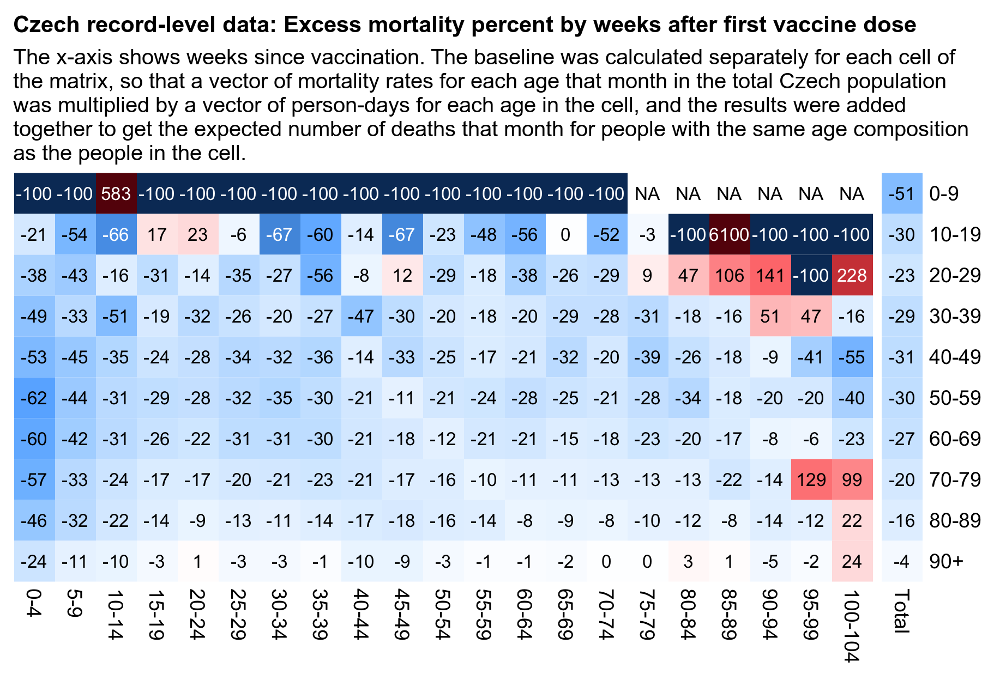
In the plot above my baseline was the total mortality rate among both vaccinated and unvaccinated people, which results in a bias where age groups with a higher percentage of vaccinated people tend to have excess mortality closer to zero. If for example there is one age group where there's 90% vaccinated people, and vaccinated people have a mortality rate of 123 and unvaccinated people have a mortality rate of 246, then it would result in only about -9% excess mortality for vaccinated people (from 123/(123*.90+246*.1)-1). But if 60% of people are vaccinated then vaccinated people would be about -29% excess mortality with the same mortality rates.of 123 and 246.
However the bias doesn't probably explain why ages 90+ don't have as low excess mortality during the first weeks of vaccination as younger age groups, because the Czech data actually has a lower percentage of vaccinated people in ages 90+ than in ages 50-79:
> rec=fread("CR_records.csv")
> rec[!(!is.na(DatumUmrti)&DatumUmrti<"2021-01-01"),.(vaxpct=mean(!is.na(Datum_1))*100),.(age=pmax(0,pmin(90,(2021-Rok_narozeni)%/%10*10)))][order(age)]|>round()|>print(r=F)
age vaxpct
0 3
10 47
20 68
30 65
40 73
50 76
60 82
70 86
80 84
90 70
In order to avoid the bias, in the next plot I calculated the baseline, based on the trend in mortality rates within five-year age groups in 2010-2019. However now my excess mortality on weeks 0-4 was about -61% for ages 50-59 but only about -37% for ages 90+, even though later on the difference got smaller, which might indicate that the temporal healthy vaccinee effect might in fact be less strong in the oldest age groups:
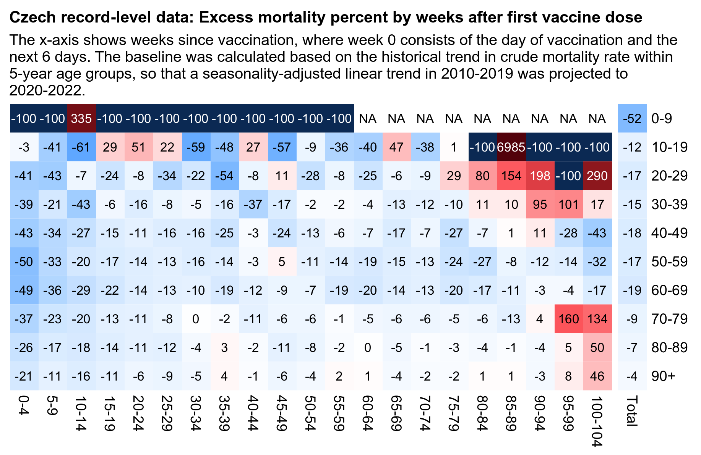
weekbin=5;agebin=10;maxage=90
t=data.table::fread("http://sars2.net/f/czbucketskeep.csv.gz")[dose<=1][,.(dead=sum(dead),alive=sum(alive)),by=.(month,age,type,week)]
# first plot
t=merge(t[type!=""],t[,.(rate=sum(dead)/sum(alive)),by=.(month,age)])
# # second plot
# proj=fread("http://sars2.net/f/czdeadproj.csv")[,.(dead=sum(dead),pop=sum(pop)),by=.(month=substr(date,1,7),age)]
# t=merge(t[type!=""]|>transform(age=pmin(90,age%/%5*5)),proj[,.(month,age,rate=dead/pop)])
t=t[,.(dead=sum(dead),alive=sum(alive),base=sum(rate*alive)),by=.(week%/%weekbin*weekbin,age=pmin(90,age%/%agebin*agebin))][order(week)]
t$age=`levels<-`(factor(t$age),paste0(seq(0,maxage,agebin),c(paste0("-",seq(agebin-1,maxage,agebin)),"+")))
t$week=`levels<-`(factor(t$week),sapply(sort(unique(t$week)),\(i)paste0(i,"-",i+weekbin-1)))
t=rbind(t,t[,.(dead=sum(dead),alive=sum(alive),base=sum(base),week="Total"),by=age])
m=tapply(with(t,(dead-base)/ifelse(dead>base,base,dead)*100),t[,2:1],c)
disp=round(tapply((t$dead/t$base-1)*100,t[,2:1],c))
disp[is.nan(disp)]=-100
mpop=xtabs(alive~age+week,t)
exp=.8;m=abs(m)^exp*sign(m)
maxcolor=400^exp;m[is.infinite(m)]=-maxcolor;m[is.nan(m)]=-maxcolor
pal=hsv(rep(c(7/12,0),5:4),c(.9,.75,.6,.3,0,.3,.6,.75,.9),c(.4,.65,1,1,1,1,1,.65,.4))
pheatmap::pheatmap(m,filename="0.png",display_numbers=disp,
gaps_col=ncol(m)-1,
cluster_rows=F,cluster_cols=F,legend=F,
cellwidth=18,cellheight=18,fontsize=9,fontsize_number=8,border_color=NA,na_col="white",
number_color=ifelse(!is.na(m)&abs(m)>.5*maxcolor,"white","black"),
breaks=seq(-maxcolor,maxcolor,,256),colorRampPalette(pal)(256))
Kirsch included these comments in the file Full analysis - All vaccines.xlsx:
This is the pivot table analysis for Study #1 which enrolled any who got their first COVID shot anytime in 2021.
Note that if you didn't get a second shot, it's highly likely that it is because you died.
However the mortality rate ratio (MRR) which is MR(Moderna)/MR(Pfizer) is also high for those people when it should be 1 if both vaccines are safe.
See the Detail 1 tab which shows that the MRR ratio is >1 for each and every 5 year age group examined which eliminates the Simpson's paradox.
Additional note
Those who mixed vaccines between dose 1 vs. dose 2 had the highest increase in ACM.
The high MR line items for the second vaccine being None is likely because those people died before their second vaccine so this should not be misinterpreted as you must get two vaccines or you'll die.
Note that if you Moderna then Pfizer vs. Pfizer and then Moderna, the MRS were nearly identical around 2175) so the order of shots did not matter!!!
However, the MR of a mixed dose did NOT give you an MR between the two pure vaccines. It was higher than pure Pfizer or pure Moderna.
Note that MOST people did not mix brands between dose 1 and dose 2.
In the code below I calculated ASMR during the first year from the first dose using the same simple but inaccurate method as earlier, where I treated the age of each person as their year of birth subtracted from 2021. However I actually got very low ASMR for people who got Pfizer for the first dose and Moderna for the second dose (even though they consisted of only 279 people so the confidence interval is huge):
retype=\(x){name1=c("","Comirnaty","SPIKEVAX","VAXZEVRIA","COVID-19 Vaccine Janssen");name2=c("None","Pfizer","Moderna","AstraZeneca","Janssen");ifelse(x%in%name1,name2[match(x,name1)],"Other")}
std=fread("http://sars2.net/f/czpopdead.csv")[year==2022,pop]
rec=fread("CR_records.csv")
t=rec[Datum_1<as.Date("2022-1-1"),.(dead=sum(!is.na(DatumUmrti)&DatumUmrti<Datum_1+365),pop=.N),.(age=pmin(100,2021-Rok_narozeni),type1=retype(OckovaciLatka_1),type2=retype(OckovaciLatka_2))]
t[,.(asmr=round(sum(dead/pop*std[age+1]/sum(std)*1e5)),dead=sum(dead),pop=sum(pop),meanage=round(weighted.mean(age,pop))),.(type1,type2)][order(-pop)]|>print(r=F)
type1 type2 asmr dead pop meanage
Pfizer Pfizer 705 45595 5411522 49
Moderna Moderna 918 8778 509704 55
AstraZeneca AstraZeneca 781 10639 439648 68
Janssen None 1325 4418 404824 46
Pfizer None 11599 5914 49445 43
Moderna None 11274 1200 6224 52
AstraZeneca None 17457 3091 5522 75
AstraZeneca Pfizer 938 46 1795 61
Moderna Pfizer 1507 13 569 48
Other Other 0 0 348 43
AstraZeneca Moderna 973 10 329 62
Pfizer Moderna 421 6 279 50
Pfizer Other 0 0 130 49
Pfizer Janssen 253 1 126 43
AstraZeneca Janssen 1653 7 109 64
AstraZeneca Other 0 0 34 72
Moderna Janssen 989 2 33 47
Moderna Other 0 0 25 62
Pfizer AstraZeneca 0 0 24 51
Other AstraZeneca 0 0 21 48
Moderna AstraZeneca 630 1 7 59
Other None 0 0 1 47
Other Pfizer 0 0 1 80
type1 type2 asmr dead pop meanage
But actually ASMR is unreliable in cases like this where there's only a small number of people and the people can be unevenly distributed across age groups. In the following code I calculated the expected number of deaths by multiplying the Czech mortality rate for each age in 2021-2022 with the number of people for each age. I looked at all 6 pairs of crossovers between Pfizer, Moderna, and AstraZeneca vaccines, but the total excess mortality between them was only about -18%:
retype=\(x){name1=c("","Comirnaty","SPIKEVAX","VAXZEVRIA","COVID-19 Vaccine Janssen");name2=c("None","Pfizer","Moderna","AstraZeneca","Janssen");ifelse(x%in%name1,name2[match(x,name1)],"Other")}
base=fread("http://sars2.net/f/czpopdead.csv")[year%in%2021:2022,.(sum(dead)/sum(pop)),age][[2]]
rec=fread("CR_records.csv")
t=rec[Datum_1<as.Date("2022-1-1"),.(dead=sum(!is.na(DatumUmrti)&DatumUmrti<Datum_1+365),pop=.N),.(age=pmin(100,2021-Rok_narozeni),type1=retype(OckovaciLatka_1),type2=retype(OckovaciLatka_2))]
pick=c("Pfizer","Moderna","AstraZeneca")
t=t[type1%in%pick&type2%in%pick&type1!=type2]
t=rbind(t,t[,.(dead=sum(dead),pop=sum(pop),type1="Total"),.(age,type2)])
t=rbind(t,t[,.(dead=sum(dead),pop=sum(pop),type2="Total"),.(age,type1)])
t[,.(excesspct=round((sum(dead)/sum(pop*base[pmin(age,100)+1])-1)*100),dead=sum(dead),pop=sum(pop),meanage=round(weighted.mean(age,pop))),.(type1,type2)][order(type1,type2)]|>print(r=F)
type1 type2 excesspct dead pop meanage
AstraZeneca Moderna -20 10 329 62
AstraZeneca Pfizer -24 46 1795 61
AstraZeneca Total -23 56 2124 62
Moderna AstraZeneca 982 1 7 59
Moderna Pfizer 6 13 569 48
Moderna Total 13 14 576 48
Pfizer AstraZeneca -100 0 24 51
Pfizer Moderna -11 6 279 50
Pfizer Total -18 6 303 50
Total AstraZeneca 51 1 31 53
Total Moderna -17 16 608 56
Total Pfizer -19 59 2364 58
Total Total -18 76 3003 58
In the output above Pfizer-Moderna has a similar excess mortality percent as Moderna-Pfizer, even though in the block of output before it Moderna-Pfizer got over 3 times higher ASMR than Pfizer-Moderna. However that's because the Moderna-Pfizer group had one death in ages 10-19 and one death in ages 40-49, which together added over 500 units to the total ASMR value. With ASMR, the mortality rates of younger age groups that make up a large percent of the standard population are given more weight than the mortality rates of the oldest age groups that make up a small percent of the standard population:
std=fread("http://sars2.net/f/czpopdead.csv")[year==2022,pop]
t[type1=="Moderna"&type2=="Pfizer",.(asmr=sum(dead/pop*std[age+1]/sum(std)*1e5),dead=sum(dead),pop=sum(pop),stdpoppct=100*sum(std[age+1]/sum(std))),.(agegroup=age%/%10*10)][order(agegroup)]|>transform(asmrperdead=asmr/dead)|>mutate_if(is.double,round)|>print(r=F)
agegroup asmr dead pop stdpoppct asmrperdead
10 282 1 33 8 282
20 0 0 107 10 NaN
30 0 0 105 13 NaN
40 258 1 73 16 258
50 0 0 67 13 NaN
60 0 0 64 12 NaN
70 671 4 72 10 168
80 179 3 33 3 60
90 117 4 15 0 29 # for ages 90-99 the contribution to ASMR per death was about one tenth of the contribution in ages 10-19
In the Czech Republic spikes in excess mortality coincide with spikes in PCR positivity like in other countries, except that after Omicron there seems to be high PCR positivity coupled with low excess mortality, which is also similiar to many other countries. In winter 2020-2021 there's a weird three-hump pattern where there's three different spikes in excess deaths, but each of them also coincides with a spike in PCR positivity. And around mid-2021 when the number of new vaccine doses given peaked, there was low excess mortality.
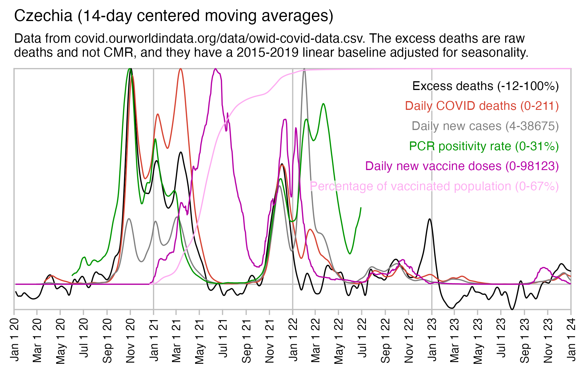
At OWID weekly excess deaths peaked at about 104% in November 2020 and 58% in December 2021:
$ wget covid.ourworldindata.org/data/owid-covid-data.csv $ sed '1n;/Czechia/!d' owid-covid-data.csv|csvtk cut -flocation,date,excess_mortality|awk -F, '$3>50' location,date,excess_mortality Czechia,2020-10-25,71.85 Czechia,2020-11-01,101.35 Czechia,2020-11-08,103.79 Czechia,2020-11-15,80.85 Czechia,2020-11-22,60.63 Czechia,2021-01-03,53.57 Czechia,2021-01-10,58.77 Czechia,2021-01-17,56.32 Czechia,2021-03-07,55.34 Czechia,2021-03-14,63.21 Czechia,2021-03-21,60.61 Czechia,2021-04-04,50.22 Czechia,2021-11-28,50.76 Czechia,2021-12-05,57.82 Czechia,2021-12-12,54.9
After mid-2021 when new vaccine doses peaked, there were only two relatively brief periods when the mortality was clearly elevated above the baseline. The first was during the COVID spike around December 2021. The second was around December 2022 when many European countries had a spike in all-cause deaths but not COVID deaths, which was probably caused by influenza A since it coincided with a peak in the number of positive tests for influenza A: [https://app.powerbi.com/view?r=eyJrIjoiYWU4YjUyN2YtMDBkOC00MGI1LTlhN2UtZGE5NThjY2E1ZThhIiwidCI6ImY2MTBjMGI3LWJkMjQtNGIzOS04MTBiLTNkYzI4MGFmYjU5MCIsImMiOjh9]
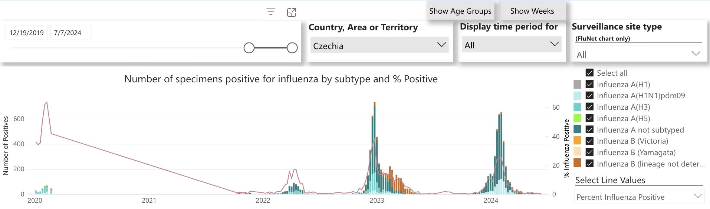
Germany also had a sharp spike in excess deaths in December 2022, which coincided with a high incidence of influenza-like illness and acute respiratory illness reported by the Robert Koch Institute's GrippeWeb service, but at the same time there was a low number of COVID deaths compared to the two previous winters: [https://github.com/robert-koch-institut/GrippeWeb_Daten_des_Wochenberichts]
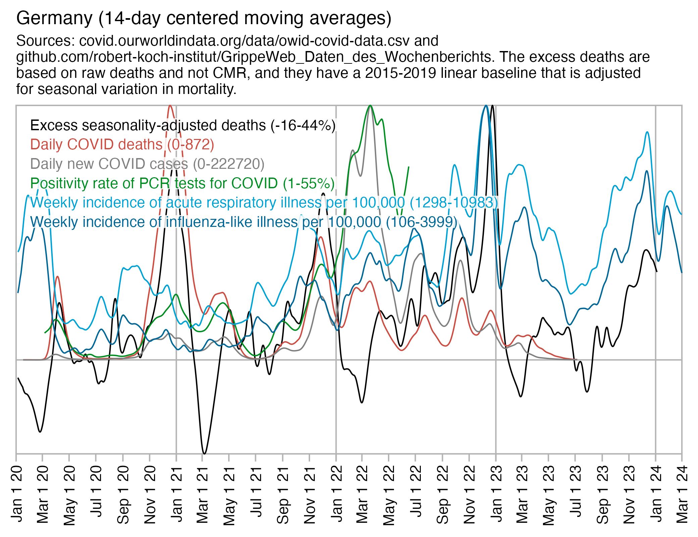
Kirsch seems to suggest that a large part of the Czech excess mortality after vaccination can be attributed to the vaccines, and he also says that the vaccines don't necessarily kill people soon after vaccination but they result in a chronic increase in mortality, because his plots show that the number of deaths by weeks since vaccination goes up over time, and he has attributed the increase in his plots to deaths caused by vaccines. But then from mid-2021 onwards after most people had been vaccinated, why were the excess deaths concentrated into two relatively sharp spikes around December 2021 and December 2022? And if vaccines killed a particularly high number of people in December 2021, then why was the ratio of unvaccinated to vaccinated ASMR elevated in December 2021?
The resident population estimates at Eurostat are for January 1st of each year. In the record-level data you can get the age on each person on December 31st 2020 if you subtract the year of birth from 2020, so it's only one day off from the date of the population estimates at Eurostat.
The resident population estimates in the 2021 Czech census are for March 26th 2021: https://scitani.gov.cz/age-structure#skupina-282345.
In most 10-year age groups the record-level data contains about 98-104% of the people in the 2021 census, but in ages 90-99 it's about 107% and in ages 100+ it's about 209%:
rec=fread("CR_records.csv")
t=rec[Rok_narozeni<2021&!(!is.na(DatumUmrti)&DatumUmrti<"2021-01-01"),list(recordlevel=.N),.(age=pmin(2020-Rok_narozeni,100)%/%10*10)][order(age)]
t=merge(t,fread("http://sars2.net/f/czcensus2021pop.csv")[,.(census2021=sum(pop)),.(age=age%/%10*10)])
t=merge(t,fread("http://sars2.net/f/czpopdead.csv")[year==2021,.(eurostat=sum(pop)),.(age=age%/%10*10)])
t=rbind(t,t[,lapply(.SD,sum)][,age:="Total"])
t[,censuspct:=recordlevel/census2021*100]
t[,eurostatpct:=recordlevel/eurostat*100]
print(mutate_if(t,is.double,round,1),row.names=F)
age recordlevel census2021 eurostat censuspct eurostatpct
0 1122110 1110656 1106350 101.0 101.4
10 1083970 1070940 1064611 101.2 101.8
20 1091962 1078231 1074387 101.3 101.6
30 1465653 1409650 1398642 104.0 104.8
40 1773632 1735533 1731067 102.2 102.5
50 1361789 1354501 1345943 100.5 101.2
60 1298397 1284689 1293120 101.1 100.4
70 1038356 1037997 1035782 100.0 100.2
80 382614 378684 380997 101.0 100.4
90 65762 62639 63318 105.0 103.9
100 957 647 619 147.9 154.6
Total 10685202 10524167 10494836 101.5 101.8
In the code above I excluded people who were born in 2021 or later or who had died before 2021. But the total population size in the record-level data was still about 1-2% higher than the resident population estimates in the 2021 census and Eurostat. But both of them only included the resident population, so I don't know if the record-level data also includes non-residents.
In October 2021 unvaccinated people had about 2.1 times higher ASMR than vaccinated people, but over the next two months when there was a spike in excess deaths caused by COVID, the ratio increased first to about 2.8 in November and then about 3.1 in December. But by May 2022 when COVID deaths had fallen close to zero, the ratio had fallen back down to about 1.7:
> buck=fread("http://sars2.net/f/czbucketskeep.csv.gz")[month>="2020-12"&dose<=1]
> std=fread("http://sars2.net/f/czcensus2021pop.csv")$pop
> buck[,.(dead=sum(dead),alive=sum(alive)),.(month,vax=dose==1,age=pmin(age,100))][,.(asmr=sum(dead/alive*std[age+1]/sum(std)*365e5)),.(month,vax)][,.(ratio=round(asmr[!vax]/asmr[vax],1)),month]|>print(r=F)
month ratio
2020-12 Inf
2021-01 1.2
2021-02 1.1
2021-03 2.8
2021-04 3.2
2021-05 3.4
2021-06 3.0
2021-07 2.6
2021-08 2.3
2021-09 2.2
2021-10 2.1
2021-11 2.8
2021-12 3.1
2022-01 2.6
2022-02 2.5
2022-03 2.3
2022-04 1.8
2022-05 1.8
2022-06 1.7
2022-07 1.7
2022-08 1.6
2022-09 1.7
2022-10 1.7
2022-11 1.6
2022-12 1.6
month ratio
In December 2023 Kirsch published record-level data from the Maldives which included a complete or nearly complete table of people who died in the Maldives in 2021-2022 along with their dates of vaccination. [moar.html#Data_for_deaths_in_2020_2023_in_Maldives] I used the data to calculate a rough ratio of unvaccinated CMR to vaccinated CMR so that during for example in May 2021 when about 41.922% of people were unvaccinated and there were 122 deaths in unvaccinated people and 81 deaths in vaccinated people, I calculated the ratio as (122/41.922)/(81/(100-41.922)), which is about 2.1. In May and June 2021 when Maldives had the most COVID deaths, the ratio of unvaccinated to vaccinated CMR was about 2.1, but the ratio was much lower in the surrounding months, which seems to indicate that unvaccinated people were more likely to die of COVID:

The method I used to calculate the mortality ratios in the Maldives didn't even take into account that vaccinated people were older on average than unvaccinated people, so I would've probably gotten higher ratios if I would've been able to calculate mortality ratios normalized by age.
However now with the Czech data I was able to use a more sophisticated method to calculate a ratio between unvaccinated and vaccinated mortality so that it was adjusted for age, but I still got similar results where the ratio was temporarily elevated during a period of months that had a high number of COVID deaths.
The ratio column below shows the ASMR in people whose first dose was Moderna divided by the ASMR in people whose first dose was Pfizer. The ratio is actually lower than usual during the COVID wave in November to December 2021. It might possibly indicate that Moderna vaccines were more effective in preventing COVID deaths than Pfizer vaccines, even though it might also indicate that there's some confounding factors which caused people who got a Moderna vaccine to be less likely to die from COVID:
> buck=fread("http://sars2.net/f/czbucketskeep.csv.gz")[month>="2020-12"&dose<=1]
> std=fread("http://sars2.net/f/czcensus2021pop.csv")$pop
> buck[,.(dead=sum(dead),alive=sum(alive)),.(month,type,age=pmin(age,100))][,.(asmr=sum(dead/alive*std[age+1]/sum(std)*365e5)),.(month,type)][,.(ratio=round(asmr[type=="Moderna"]/asmr[type=="Pfizer"],2),Moderna=round(asmr[type=="Moderna"]),Pfizer=round(asmr[type=="Pfizer"]),unvax=round(asmr[type=="Unvaccinated"])),month]|>print(r=F)
month ratio Moderna Pfizer unvax
2020-12 NA NA 0 1570
2021-01 1.71 2508 1468 1820
2021-02 1.53 2537 1656 1807
2021-03 1.82 1516 834 2441
2021-04 1.33 823 620 2133
2021-05 1.26 733 583 2080
2021-06 1.27 815 643 1982
2021-07 1.42 954 674 1864
2021-08 1.32 928 702 1755
2021-09 1.43 1074 752 1798
2021-10 1.37 1164 847 1938
2021-11 1.17 1204 1033 3128
2021-12 1.20 1245 1040 3553
2022-01 1.28 1155 901 2530
2022-02 1.26 1210 963 2601
2022-03 1.26 1164 921 2245
2022-04 1.35 1261 935 1839
2022-05 1.41 1189 844 1588
2022-06 1.23 1017 828 1503
2022-07 1.28 1083 849 1538
2022-08 1.30 1141 875 1523
2022-09 1.34 1202 899 1667
2022-10 1.29 1211 936 1723
2022-11 1.35 1212 895 1547
2022-12 1.39 1539 1110 1931
month ratio Moderna Pfizer unvax
However when I used a seasonality-adjusted 2010-2019 linear projection as the baseline, the oldest age groups had a relatively low percentage of excess deaths in November to December 2021 compared to ages 55-79:
> proj=fread("http://sars2.net/f/czdeadproj.csv")
> proj[grepl("2021-1[12]",date),.(excess=round(100*(sum(dead)/sum(projdead)-1))),age][,setNames(excess,age)]
0 5 10 15 20 25 30 35 40 45 50 55 60 65 70 75 80 85 90
-6 6 8 2 25 -10 8 10 19 11 22 23 27 27 24 25 20 15 16
And Moderna had a higher percentage of people in the oldest age groups than Pfizer:
> t=fread("http://sars2.net/f/czbucketskeep.csv.gz")[dose<=1]
> type=factor(t$type,names(sort(tapply(t$alive,t$type,sum),T)))
> age=pmin(t$age%/%10*10,90)
> m=xtabs(t$alive~age+type)
> round(t(m)/colSums(m)*100,1)
age
type 0 10 20 30 40 50 60 70 80 90
Unvaccinated 15.8 12.3 10.3 14.1 15.6 11.4 10.1 7.3 2.6 0.5
Pfizer 0.3 7.2 9.9 13.5 19.5 16.4 15.5 12.1 4.9 0.8
Moderna 0.0 2.0 8.4 11.5 16.4 14.8 16.0 21.8 7.6 1.4
AstraZeneca 0.0 0.1 1.3 2.8 6.6 9.7 20.8 42.3 14.4 1.9
Janssen 0.0 2.0 16.3 17.8 20.5 16.6 14.8 9.2 2.3 0.4
Other 0.1 3.8 19.7 26.3 20.5 13.8 9.7 4.9 1.1 0.1
Here during the period from October 2020 to April 2021 which had high excess mortality because of COVID, the excess mortality seems to have fallen back down earlier in older age groups, so it first fell close to zero in January in ages 90+, in April in ages 80-89, in May in ages 70-79, and in June in ages 60-69. It might be because older age groups got vaccinated earlier than younger age groups:
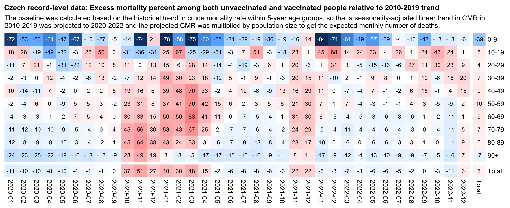
This shows that the percentage of vaccinated person-days out of all person-days first reached above 50% in March in ages 90+ and 80-89, in April in ages 70-79, in May in ages 60-69, and in June in ages 50-59:
> b=fread("http://sars2.net/f/czbucketskeep.csv.gz")[dose<=1]
> b[,.(vaxpct=sum(alive[dose==1])/sum(alive)*100),.(month,age=pmin(age%/%10*10,90))][,round(xtabs(vaxpct~month+age))[12:24,]]
age
month 0 10 20 30 40 50 60 70 80 90
2020-12 0 0 0 0 0 0 0 0 0 0
2021-01 0 0 1 1 1 2 1 1 6 8
2021-02 0 0 2 2 3 3 2 2 27 32
2021-03 0 0 3 4 6 7 6 22 58 51
2021-04 0 0 5 6 10 13 18 56 71 60
2021-05 0 1 8 11 24 41 59 75 77 65
2021-06 0 4 21 33 52 61 72 80 81 68
2021-07 0 15 40 45 59 65 75 82 82 69
2021-08 0 27 49 50 63 68 78 84 83 70
2021-09 0 31 52 52 64 70 79 85 84 71
2021-10 0 33 54 54 65 71 79 85 84 71
2021-11 0 37 60 58 69 74 81 86 85 72
2021-12 0 41 65 62 71 76 82 88 86 74
In the plot above I thought that maybe the reason why the excess mortality fell close to 0% earlier in older age groups might have been some kind of an artifact of the method I used to calculate the baseline, because in the dataset for weekly deaths by age group I used to calculate the baseline, ages 90 and above were aggregated together and younger ages were split into 5-year age groups, so it might result in the excess mortality of the oldest age groups in being understated if the upper ends of the age groups were overrepresented in the record-level data relative to the lower ends. And I also projected the baseline for each age group into the future by doing a linear regression of the mortality rate in 2010-2019, which might not be accurate for all age groups.
So therefore I made the plot below where I used a different baseline, where I first calculated the total mortality rates in the record-level data for each single year of age in 2020-2022, except I aggregated together ages 100 and above. And then in order to derive the expected number of deaths for each cell of the heatmap, I multiplied a vector of person-days for each age in the cell by a vector of the total mortality rates for each age in 2020-2022. However it also gave me a similar result, where during the period with high excess deaths that lasted for late 2020 until early 2021, the excess deaths fell back down first in ages 90+, next in ages 80-89, and later in the younger age groups:
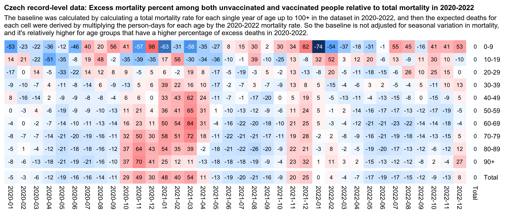
t=data.table::fread("http://sars2.net/f/czbucketskeep.csv.gz")[dose<=1]
# first plot
t=t[,.(dead=sum(dead),alive=sum(alive)),.(month,age=pmin(90,age%/%5*5))]
proj=fread("http://sars2.net/f/czdeadproj.csv")[,.(projdead=sum(projdead),pop=sum(pop)),.(month=substr(date,1,7),age)]
t=merge(t,proj[,.(month,age,rate=projdead/pop)])
# # second plot
# t=t[,.(dead=sum(dead),alive=sum(alive)),.(month,age=pmin(age,100))]
# t=merge(t,t[,.(rate=sum(dead)/sum(alive)),age])
t=t[,.(dead=sum(dead),alive=as.numeric(sum(alive)),base=sum(rate*alive)),.(month,age=pmin(90,age%/%10*10))]
t[,age:=`levels<-`(factor(age),paste0(0:9*10,c(paste0("-",1:9*10-1),"+")))]
t=rbind(t,t[,.(dead=sum(dead),alive=sum(alive),base=sum(base),month="Total"),age])
t=rbind(t,t[,.(dead=sum(dead),alive=sum(alive),base=sum(base),age="Total"),month])
m=tapply(with(t,(dead-base)/ifelse(dead>base,base,dead)*100),t[,2:1],c)
disp=tapply((t$dead/t$base-1)*100,t[,2:1],round)
disp[is.nan(disp)]=-100
mpop=xtabs(alive~age+month,t)
exp=.8;m=abs(m)^exp*sign(m)
maxcolor=300^exp;m[is.infinite(m)]=-maxcolor;m[is.nan(m)]=-maxcolor
pheatmap::pheatmap(m,filename="0.png",display_numbers=disp,legend=F,cluster_rows=F,cluster_cols=F,
gaps_row=nrow(m)-1,gaps_col=ncol(m)-1,
cellwidth=18,cellheight=18,fontsize=9,fontsize_number=8,border_color=NA,na_col="white",
number_color=ifelse(!is.na(m)&abs(m)>.5*maxcolor,"white","black"),breaks=seq(-maxcolor,maxcolor,,256),
colorRampPalette(hsv(rep(c(7/12,0),5:4),c(.9,.75,.6,.3,0,.3,.6,.75,.9),c(.4,.65,1,1,1,1,1,.65,.4)))(256))
The README file in Kirsch's GitHub repository includes this table:
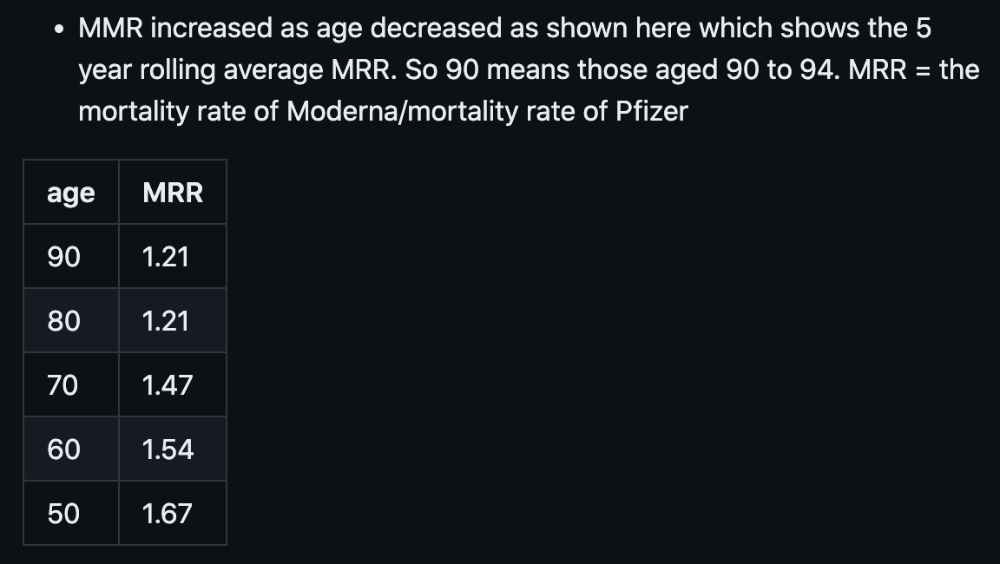
I thought the difference might partially be if people who got vaccinated later had a higher Moderna-Pfizer ratio and younger people got vaccinated later than older people, so I made the heatmap below. I didn't calculate CMR for each age group like Kirsch, but I calculated the ASMR for each single year of age within an age group and then I added together the results to get the total ASMR for the ten-year age groups (where the ASMR for a single age is the CMR of the age multiplied by the fraction of the age in the standard population).
But anyway my heatmap below shows that the Moderna-Pfizer ratio was actually the highest in ages 90+, even though it was fairly low in ages 70-79 and 80-89.
For some reason people who got vaccinated in April 2021 subsequently had a low Moderna-Pfizer ratio of only about 1.1. But ages 70-79 received a large number of first doses in April 2021, which might partially explain their low ratio.
The Moderna-Pfizer ratio seems to have gotten lower starting from around October 2021. Among people who received the first vaccine dose in October 2021, November 2021, or February 2022, Pfizer had higher total ASMR than Moderna, so the Moderna-Pfizer ratio was below 1. So there seem to be some confounding factors which cause the ratio to shift dramatically over time:
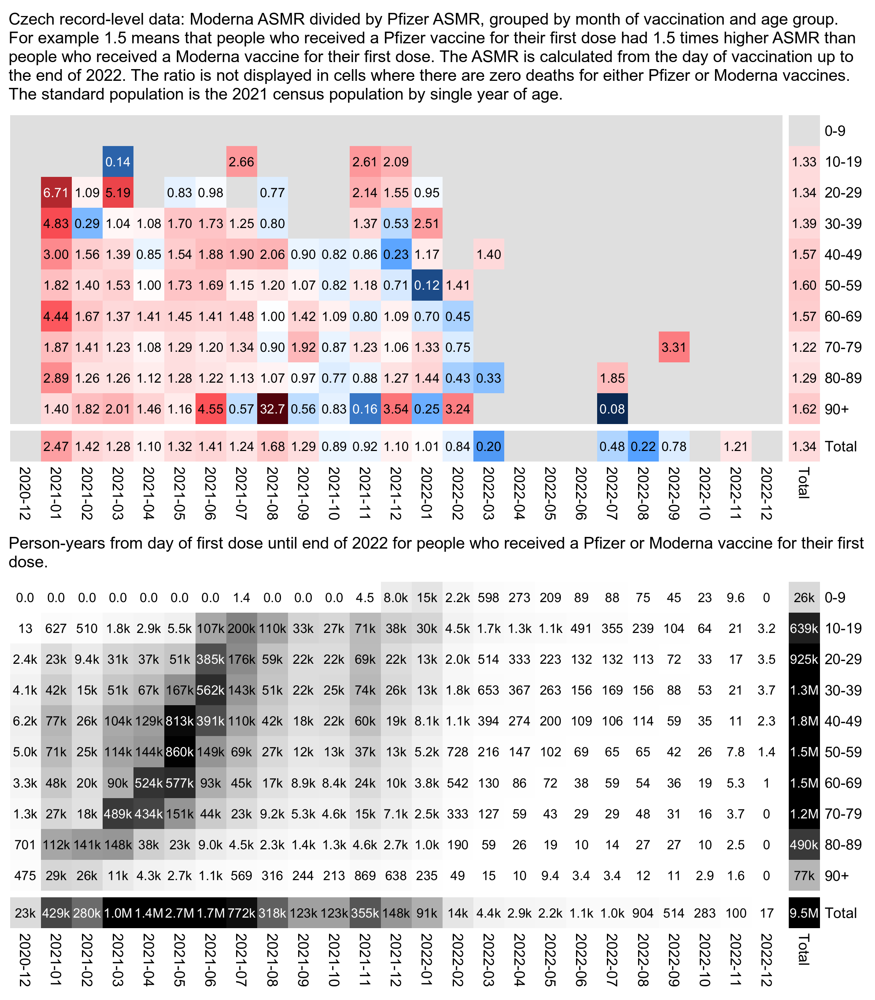
library(data.table)
t=fread("http://sars2.net/f/czbucketskeep.csv.gz")[dose==1,.(dead=sum(dead),alive=sum(alive)),.(vaxmonth,type,age)]
std=fread("http://sars2.net/f/czcensus2021pop.csv")$pop
t=rbind(t,t[,.(dead=sum(dead),alive=sum(alive),vaxmonth="Total"),.(type,age)])
totage=t[,.(age="Total",alive=sum(as.double(alive)),asmr=sum(dead/alive*std[pmin(age,100)+1]/sum(std))),.(vaxmonth,type)]
t=t[,.(alive=sum(alive),asmr=sum(dead/alive*std[pmin(age,100)+1]/sum(std))),.(vaxmonth,type,age=pmin(age%/%10*10,90))]
t=rbind(t,totage)
t[,age:=`levels<-`(factor(age),c(paste0(0:8*10,"-",1:9*10-1),"90+","Total"))]
t[,vaxmonth:=factor(vaxmonth)]
m1=t[type=="Pfizer",tapply(asmr,list(age,vaxmonth),c)]
m2=t[type=="Moderna",tapply(asmr,list(age,vaxmonth),c)]
mpop=xtabs(alive~age+vaxmonth,t[type%in%c("Moderna","Pfizer")])/365
m=(m2-m1)/ifelse(m1>m2,m2,m1)
disp=matrix(sprintf(ifelse(m2/m1>10,"%.1f","%.2f"),m2/m1),nrow(m))
hide=pmin(m1,m2)==0;m[hide]=NA;disp[hide]="";disp[is.na(m)]=""
exp=.7;m=abs(m)^exp*sign(m);maxcolor=10^exp
pheatmap::pheatmap(m,filename="i1.png",display_numbers=disp,
gaps_row=nrow(m)-1,gaps_col=ncol(m)-1,
cluster_rows=F,cluster_cols=F,legend=F,cellwidth=19,cellheight=19,fontsize=9,fontsize_number=8,
border_color=NA,na_col="gray90",
number_color=ifelse((abs(m)>.55*maxcolor)&!is.na(m),"white","black"),
breaks=seq(-maxcolor,maxcolor,,256),
colorRampPalette(hsv(rep(c(7/12,0),5:4),c(.9,.75,.6,.3,0,.3,.6,.75,.9),c(.4,.65,1,1,1,1,1,.65,.4)))(256))
kimi=\(x){e=floor(log10(ifelse(x==0,1,abs(x))));e2=pmax(e,0)%/%3+1;p=!is.na(x)
x[p]=paste0(sprintf(paste0("%.",ifelse(e[p]%%3==0,1,0),"f"),x[p]/1e3^(e2[p]-1)),c("","k","M","B","T")[e2[p]]);x}
exp2=.6;mpop2=mpop^exp2;maxcolor2=max(mpop2[-nrow(m),-ncol(m)])
disp2=kimi(ifelse(mpop==0,0,mpop))
pheatmap::pheatmap(mpop2,filename="i2.png",display_numbers=disp2,
gaps_row=nrow(m)-1,gaps_col=ncol(m)-1,
cluster_rows=F,cluster_cols=F,legend=F,cellwidth=19,cellheight=19,fontsize=9,fontsize_number=8,
border_color=NA,na_col="white",
number_color=ifelse(mpop2>maxcolor2*.45,"white","black"),
breaks=seq(0,maxcolor2,,256),
sapply(seq(1,0,,256),\(i)rgb(i,i,i)))
cap="Czech record-level data: Moderna ASMR divided by Pfizer ASMR, grouped by month of vaccination and age group. For example 1.5 means that people who received a Pfizer vaccine for their first dose had 1.5 times higher ASMR than people who received a Moderna vaccine for their first dose. The ASMR is calculated from the day of vaccination up to the end of 2022. The ratio is not displayed in cells where there are zero deaths for either Pfizer or Moderna vaccines. The standard population is the 2021 census population by single year of age."
system(paste0("w=`identify -format %w i1.png`;pad=44;convert -gravity northwest -pointsize 42 -font Arial \\( -splice x24 -size $[w-pad]x caption:'",cap,"' -extent $[w-pad]x -gravity center \\) i1.png -gravity northwest \\( -size $[w-40]x caption:'Person-years from day of first dose until end of 2022 for people who received a Pfizer or Moderna vaccine for their first dose.' -extent $[w-pad]x -gravity center \\) i2.png -append 1.png"))
The total Moderna-Pfizer ratio was slightly below 1 for people who got the first dose in October 2021 or later:
> buck=fread("http://sars2.net/f/czbucketskeep.csv.gz")
> std=fread("http://sars2.net/f/czcensus2021pop.csv")$pop
> t=buck[dose==1&vaxmonth>="2021-10",.(dead=sum(dead),alive=sum(alive)),.(type,age)]
> totage=t[,.(age="Total",alive=as.double(sum(alive)),asmr=sum(dead/alive*std[pmin(age,100)+1]/sum(std)*365e5)),type]
> t=t[,.(alive=sum(alive),asmr=sum(dead/alive*std[pmin(age,100)+1]/sum(std)*365e5)),.(type,age=pmin(age%/%10*10,90))]
> t=rbind(t,totage)
> t[,.(ratio=asmr[type=="Moderna"]/asmr[type=="Pfizer"]),age][order(age)]|>print(r=F)
age ratio
10 1.5526322
20 1.3476644
30 1.0297858
40 0.7615319
50 0.8760022
60 0.9265285
70 1.1035120
80 1.0133492
90 0.7233335
Total 0.9955395
I also tried calculating a weighted average of ASMR for each vaccine type by month of vaccination, where the weight was the number of vaccine doses of any type that were given that month, but Moderna still got a much higher ASMR than Pfizer:
> buck=fread("http://sars2.net/f/czbucketskeep.csv.gz")
> std=fread("http://sars2.net/f/czcensus2021pop.csv")$pop
> t=buck[vaxmonth<="2022-08"&dose==1,.(dead=sum(dead),alive=sum(alive)),.(type,age,vaxmonth)]
> totage=t[,.(age="Total",alive=as.double(sum(alive)),asmr=sum(dead/alive*std[pmin(age,100)+1]/sum(std)*365e5)),.(type,vaxmonth)]
> t=t[,.(alive=sum(alive),asmr=sum(dead/alive*std[pmin(age,100)+1]/sum(std)*365e5)),.(type,vaxmonth)]
> t[,.(weighted_asmr=round(weighted.mean(asmr,tapply(alive,vaxmonth,sum)[vaxmonth]))),type][order(weighted_asmr)]|>print(r=F)
type weighted_asmr
Other 718
Pfizer 1095
AstraZeneca 1237
Moderna 1376
Janssen 1432
(In the code above I only included vaccines given up to August 2022, because after that many people started getting Pfizer's Omicron vaccines which are listed under the "Other" type in my buckets file.)
Czech Republic had a period of high excess deaths that lasted from roughly the fourth quarter of 2020 until the second quarter of 2021, which had an unusual pattern where there were three distinct humps in the deaths. In ages 40-59 and 60-79 the first hump was the lowest and the third hump was the highest. But in ages 80+ the first jump was the highest and the third hump was the lowest, which might be because ages 80+ got vaccinated the earliest so many people in ages 80+ had already been vaccinated by the time of the third hump, and some people had even been vaccinated by the time of the second hump:
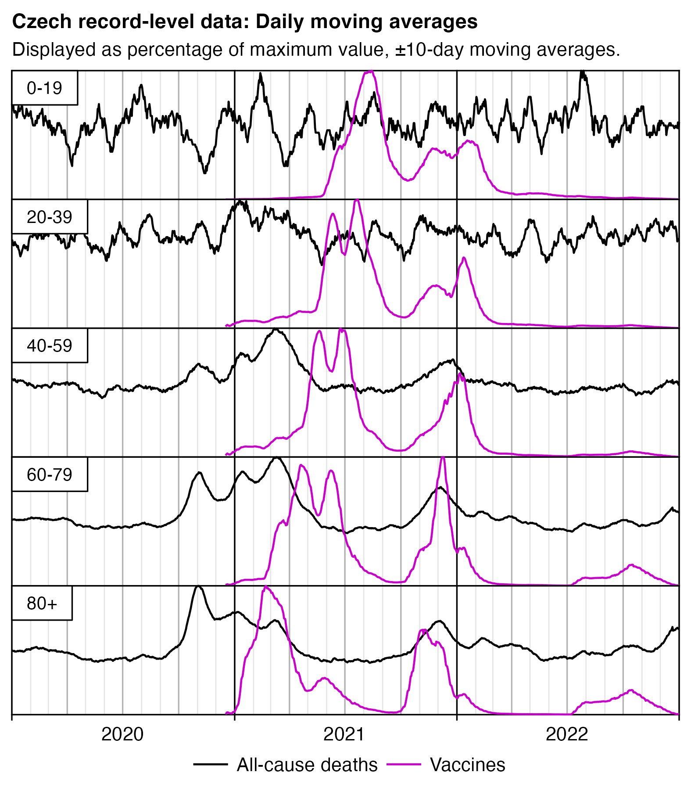
The plot above shows that there was a spike in deaths around December 2021, which a lot of people will probably blame on deaths caused by the first booster which was rolled out around the same time. In the plot above the spike in December 2021 is difficult to see or nonexistent in ages 0-19 and 20-39. However in the case of ages 40-59, 60-79, and 80+, the peak in deaths occurs in December in each of the age groups, even though the peak in new vaccine doses occurs earlier in older age groups and later in younger age groups, so that vaccine doses peak in November in ages 80+, in December in ages 60-79, and in January in ages 40-59.
In Denis Rancourt's paper about southern-hemisphere and equatorial countries, he included the plots for Peru that are shown in the GIF file below, and he argued that the spike of deaths in early 2021 was caused by the vaccines because it roughly coincided with the rollout of the first two doses in the oldest age groups. [https://correlation-canada.org/covid-19-vaccine-associated-mortality-in-the-southern-hemisphere/] However a major weakness of his argument is that the spike in deaths also occurred around the same time in younger age groups even though younger age groups got vaccinated much later than older age groups:

The plot below shows that in unvaccinated people in ages 80+, the third hump is higher than the first hump. It's probably at least partially because of the healthy vaccinee effect, because the ASMR of people who remained unvaccinated increased after the healthy vaccinees got vaccinated. But on the other hand the third hump is almost completely missing in vacinated people in ages 80+, which might explain why the third hump is relatively small in ages 80+ when both vaccinated and unvaccinated people are aggregated together:
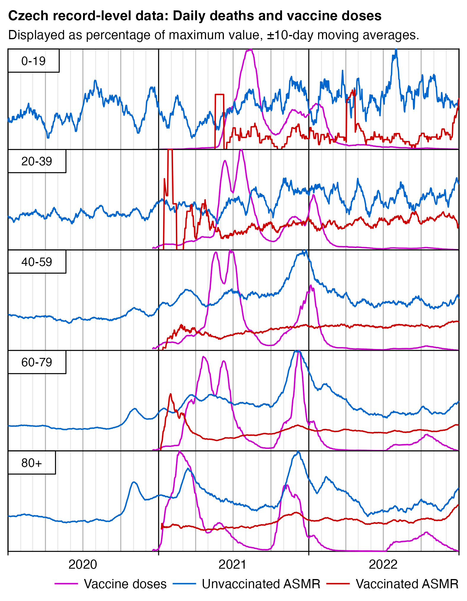
The Czech ministry of health has published CSV files for COVID deaths and hospitalizations by age: https://onemocneni-aktualne.mzcr.cz/api/v2/covid-19. Both COVID deaths and hospitalizations also have similar three-hump pattern as all-cause deaths, and in ages 80+ the first hump is the highest and the third hump is the lowest, but in ages 60-79 and 40-59 the third hump is higher than the first hump:
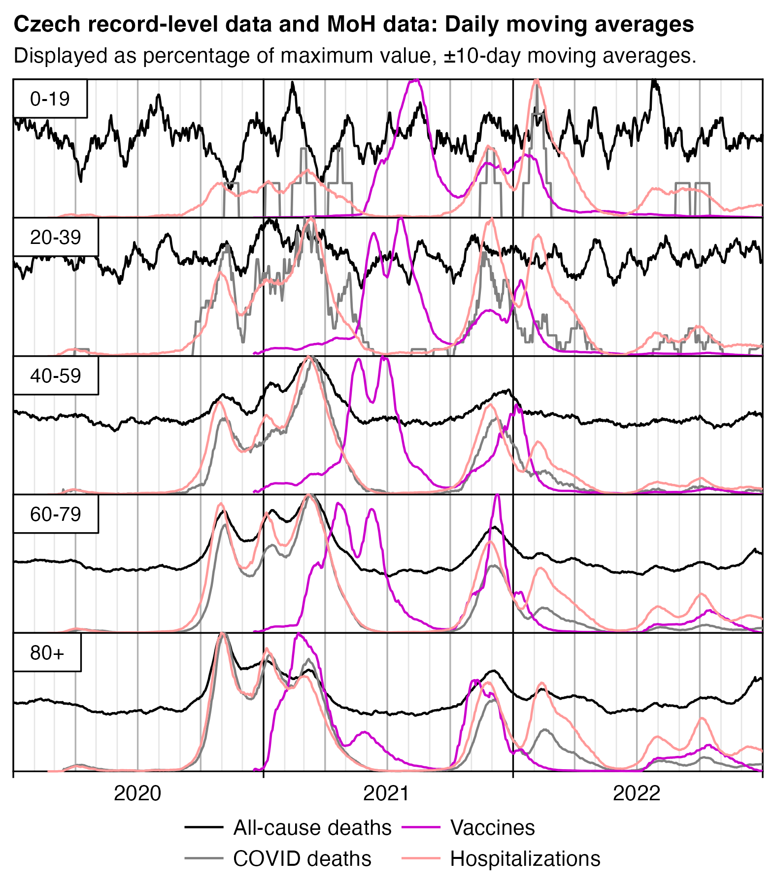
download.file("https://onemocneni-aktualne.mzcr.cz/api/v2/covid-19/nakazeni-hospitalizace-testy.csv","nakazeni-hospitalizace-testy.csv")
download.file("http://sars2.net/f/czbucketsdaily.csv.gz","czbucketsdaily.csv.gz")
download.file("https://onemocneni-aktualne.mzcr.cz/api/v2/covid-19/umrti.csv","umrti.csv")
library(data.table);library(ggplot2)
ma=\(x,b=1,f=b)setNames(rowMeans(embed(c(rep(NA,b),x,rep(NA,f)),f+b+1),na.rm=T),names(x))
ua=\(x,y,...){u=unique(x);y(u,...)[match(x,u)]}
age=\(x,y){x=as.numeric(x);y=as.numeric(y);(y-x-(y-789)%/%1461+(x-789)%/%1461)%/%365}
agecut=\(x,ages=seq(0,90,10))cut(pmax(x,0),c(ages,Inf),paste0(ages,c(paste0("-",ages[-1]-1),"+")),T,F)
# ages=c(0,12,18,30,40,60,85)
ages=0:4*20
agelev=agecut(0:120,ages)
xstart=as.Date("2020-01-01");xend=as.Date("2023-1-1")
rec=fread("Czech/data/CR_records.csv",showProgress=F)
set.seed(0);rec$birth=ua(paste0(rec$Rok_narozeni,"-1-1"),as.Date)+sample(0:364,nrow(rec),T)
dead=rec[!is.na(DatumUmrti),.(dead=.N),.(date=DatumUmrti,age=agelev[pmax(0,age(birth,DatumUmrti))+1])]
k=grep("Datum_",names(rec));dt=data.table(date=as.IDate(unlist(rec[,..k],use.names=F)),birth=rec$birth)
p=merge(dead,dt[!is.na(date)][,.(vax=.N),.(date,age=agelev[pmax(0,age(birth,date))+1])],all=T)
std=fread("http://sars2.net/f/czcensus2021pop.csv")$pop
buck=fread("czbucketsdaily.csv.gz")
buck=rbind(buck,cbind(expand.grid(date=as.IDate(xstart:xend),age=0:100,dose=unique(buck$dose)),alive=0,dead=0))|>unique(by=1:3)
unvax=buck[dose==0&alive>=1e3,.(dead=sum(dead),alive=sum(alive)),.(date,age2=age)]
vax=buck[dose>0&alive>=1e3,.(dead=sum(dead),alive=sum(alive)),.(date,age2=age)]
unvax=unvax[,.(asmr1=sum(dead/alive*std[pmin(age2,100)+1]/sum(std)*365e5)),.(age=agelev[age2+1],date)]
vax=vax[,.(asmr2=sum(dead/alive*std[pmin(age2,100)+1]/sum(std)*365e5)),.(age=agelev[age2+1],date)]
p=merge(p,merge(unvax,vax,all=T),all=T)
testy=fread("nakazeni-hospitalizace-testy.csv",na.strings="-")
testy=testy[,.(tests=sum(provedene_testy,na.rm=T),cases=sum(potvrzene_pripady,na.rm=T),hosp=sum(nove_hospitalizace,na.rm=T)),.(date=datum,age=agelev[as.numeric(sub("[-+].*","",vekova_kategorie))+1])][!is.na(age)]
p=merge(p,testy[tests>0,.(date,age,pcr=cases/tests*100,hosp)],all=T)
p=merge(p,fread("umrti.csv")[,.(coviddead=.N),.(date=datum,age=agelev[vek+1])],all=T)
p=p[date%in%xstart:xend]
p$dead[is.na(p$dead)]=0
p$coviddead[is.na(p$coviddead)&p$date>p$date[!is.na(p$coviddead)][1]]=0
p$vax[is.na(p$vax)&p$date>p$date[!is.na(p$vax)][1]]=0
p$hosp[is.na(p$hosp)&p$date>p$date[!is.na(p$hosp)][1]]=0
xbreak=seq(xstart,xend,"6 month");xlab=c(rbind("",2020:2022),"")
var=read.csv(row.names=1,text="name,group
dead,All-cause deaths,1
vax,Vaccines,2
asmr1,Unvaccinated ASMR,3
asmr2,Vaccinated ASMR,3
hosp,Hospitalizations,4
pcr,PCR positivity,5
coviddead,COVID deaths,6")
var$color=c("black","#cc00cc",hsv(7/12,1,.8),hsv(0,1,.8),hsv(0,.4,1),hsv(1/3,1,.7),"gray50")
# keep=c("dead","vax")
# keep=c("vax","asmr1","asmr2")
keep=c("dead","coviddead","vax","hosp")
long=cbind(p[,1:2],y=unlist(p[,..keep],,F),z=factor(rep(keep,each=nrow(p)),keep))
color=var[keep,]$color
long[,mav:=ma(y,10),.(age,z)]
long[,group:=var[levels(z)[z],]$group]
long=merge(long,long[,.(max=max(mav,na.rm=T)),.(group,age)])
levels(long$z)=var[levels(long$z),]$name
ggplot(long,aes(x=date))+
facet_wrap(~age,ncol=1,strip.position="top")+
geom_vline(xintercept=seq(xstart,xend,"month"),linewidth=.2,color="gray90")+
geom_vline(xintercept=seq(xstart,xend,"3 month"),linewidth=.25,color="gray70")+
geom_vline(xintercept=seq(xstart,xend,"year"),linewidth=.25,lineend="square")+
geom_hline(yintercept=0:1,linewidth=.25,lineend="square")+
geom_line(aes(y=mav/max,color=z),linewidth=.35)+
geom_label(data=data.frame(age=levels(p$age)),aes(label=paste0("\n ",age," \n")),x=xstart,y=1,lineheight=.5,hjust=0,vjust=1,size=2.3,fill=alpha("white",1),label.r=unit(0,"lines"),label.padding=unit(0,"lines"),label.size=.25)+
labs(x=NULL,y=NULL,title="Czech record-level data: Daily deaths and vaccine doses",subtitle="Displayed as percentage of maximum value, ±10-day moving averages."|>stringr::str_wrap(70))+
scale_x_date(limits=c(xstart,xend),breaks=xbreak,labels=xlab)+
scale_y_continuous(limits=0:1)+
scale_color_manual(values=color)+
coord_cartesian(clip="off",expand=F)+
guides(color=guide_legend(nrow=1,byrow=F))+
theme(axis.text=element_text(size=7,color="black"),
axis.text.y=element_blank(),
axis.ticks=element_blank(),
axis.ticks.x=element_line(color=alpha("black",c(1,0)),linewidth=.25),
axis.ticks.length=unit(0,"lines"),
axis.ticks.length.x=unit(.15,"lines"),
legend.background=element_blank(),
legend.box.spacing=unit(0,"pt"),
legend.direction="horizontal",
legend.justification=c(1,.5),
legend.key.height=unit(.7,"lines"),
legend.key.width=unit(1.1,"lines"),
legend.key=element_rect(fill=alpha("white",0)),
legend.margin=margin(.15,0,0,0,"lines"),
legend.position="bottom",
legend.spacing.x=unit(.1,"lines"),
legend.text=element_text(size=7,vjust=.5),
legend.title=element_blank(),
panel.spacing=unit(0,"lines"),
panel.background=element_rect(fill="white"),
panel.grid=element_blank(),
plot.margin=margin(.3,.3,.3,.3,"lines"),
plot.subtitle=element_text(size=7,margin=margin(0,0,.6,0,"lines")),
plot.title=element_text(size=7.5,face="bold",margin=margin(.1,0,.5,0,"lines")),
strip.background=element_blank(),
strip.text=element_blank())
ggsave("1.png",width=3.5,height=4,dpi=450)
I wanted to make sure that the CSV file for the record-level data from Kirsch's GitHub repository was identical to the file that was originally published on the GitHub account of the Czech Palacký University: https://github.com/skirsch/Czech/tree/main/data, https://github.com/PalackyUniversity/uzis-data-analysis/blob/main/data/Vesely_106_202403141131.tar.xz. However the files are in fact identical:
$ wget -q https://github.com/skirsch/Czech/raw/main/data/CR_records.csv.xz $ wget -q https://github.com/PalackyUniversity/uzis-data-analysis/raw/main/data/Vesely_106_202403141131.tar.xz $ xz -k CR_records.csv.xz $ tar -xf Vesely_106_202403141131.tar.xz $ md5 CR_records.csv Vesely_106_202403141131.csv MD5 (CR_records.csv) = c42ead8cf4685910068d0c7d4cc4c720 MD5 (Vesely_106_202403141131.csv) = c42ead8cf4685910068d0c7d4cc4c720
The CSV file for the record-level data was committed to GitHub by Tadeáš Fryčák, but he was also one of the authors of a paper published in May 2024 titled "Does the healthy vaccinee bias rule them all? Association of COVID-19 vaccination status and all-cause mortality from an analysis of data from 2.2 million individual health records": https://www.sciencedirect.com/science/article/pii/S1201971224000468. The authors of the paper described two sets of record-level data which only included about 2 million people in total, and not over 11 million people like the new dataset:
Using a Freedom of Information request, we obtained data from two health insurance houses (in the Czech Republic, health insurance is compulsory and multiple health insurance houses provide the service). Each line in the dataset corresponded to a unique individual and included their sex, age, dates and types of all COVID vaccines, and (if applicable), the date of death. When trying to find out whether there is a difference between the baseline frailty of the groups, ACM is the most telling parameter as it is not burdened with any possible misclassification on the cause of death. For this reason, only ACM will be considered in this study.
Each cooperating insurance company decided to blur the data slightly to exclude the possibility of identification of any individual. The first dataset provided by the Czech Business Insurance Company (CPZP) comprises 1,362,924 individuals, i.e., approx. 13% of the Czech population. It is by no means a fully representative sample of the Czech population because the clients of CPZP tend to be younger than average. However, the size of the cohort allows interesting analyses. The time data were blurred to week and year. The other dataset provided by the Professional Insurance Company (OZP) comprises 827,475 individuals, representing another 8% of the Czech population, the time data were blurred to month and year of events. The OZP dataset will serve for validation of the results obtained from the larger CPZP dataset. In all, we have complete data on mortality and vaccination of more than 2 million individuals over the entire period of 2021 and 2022. Both the datasets are available at https://github.com/PalackyUniversity/hve.
The authors observed the phenomenon where the mortality rate of people with 2 doses shot up when the third dose was rolled out, but they attributed it to the healthy vaccinee effect. Martin Neil and Norman Fenton have hypothesized that the same phenomenon might be explained by a classification delay which they call the "cheap trick", where deaths that occured within a certain number of weeks after the third dose would've been classified under the second dose. But because the authors of the Czech paper had access to the record-level data which showed the dates of vaccination and death of individual people, the authors could know for sure that the cheap trick was not being used in the data. They included the following comments about the plot shown below:
[...]
Now, let us focus on the red panels, covering the "high-COVID" period of October 2021-May 2022. In that period, the Czech Republic recorded almost 10,000 COVID-related deaths, which translates into an average of 40 deaths with/from COVID-19 per day. The vaccine effectiveness in preventing COVID-related deaths should lead to an increase in the ratio of unvaccinated:vaccinated ACM. However, the exact opposite happened. In all age groups, the ACM in the cohort with completed primary course (yellow bars) more than doubled compared to the low-COVID period, while the ACM of the unvaccinated cohort rose only by a third. A sanity check with the same analysis performed for the other dataset (OZP insurance company) yielded consistent results (see Supplement S6). This paradoxical observation can be caused by the fact that in the high-COVID period, vaccination by the third dose was underway, which, again, led to a subselection of the healthier group for booster dose vaccination, while infirm individuals concentrated in the group "primary course for more than 2 months."
More than two thirds of all vaccines had the type "Comirnaty" (Pfizer) each month until September 2022, when many people started getting Pfizer's Omicron vaccines ("Comirnaty Original/Omicron BA.1" and "Comirnaty Original/Omicron BA.4/BA.5"). In the table below only vaccines with the type "Comirnaty" are included under Pfizer.
Most Janssen vaccines were given between August 2021 and November 2021. Most AstraZeneca vaccines were given between February 2021 and July 2021, and there were almost no AstraZeneca vaccines given after November 2021.
> ua=\(x,y,...){u=unique(x);y(u,...)[match(x,u)]}
> rec=fread("CR_records.csv")
> date=rec[,`class<-`(unlist(.SD,,F),"Date"),.SDcols=paste0("Datum_",1:7)]|>ua(substr,1,7)
> type=rec[,unlist(.SD,,F),.SDcols=paste0("OckovaciLatka_",1:7)]
> name1=c("Comirnaty","SPIKEVAX","VAXZEVRIA","COVID-19 Vaccine Janssen","")
> name2=c("Pfizer","Moderna","AstraZeneca","Janssen","")
> type=ifelse(type%in%name1,name2[match(type,name1)],"Other")
> m=data.table(date,type)[type!="",.N,.(date,type)][,xtabs(N~date+type)]
> round(m/rowSums(m)*100,1)
type
date AstraZeneca Janssen Moderna Other Pfizer
2020-12 0.0 0.0 0.0 0.0 100.0
2021-01 0.0 0.0 2.8 0.0 97.2
2021-02 6.7 0.0 8.0 0.0 85.3
2021-03 19.2 0.0 12.2 0.0 68.5
2021-04 10.5 0.4 11.3 0.0 77.8
2021-05 7.3 1.6 7.8 0.0 83.4
2021-06 7.0 1.8 7.4 0.0 83.8
2021-07 5.2 2.4 6.8 0.0 85.5
2021-08 2.2 5.4 3.5 0.0 88.9
2021-09 0.5 10.4 7.0 0.0 82.1
2021-10 0.2 10.1 7.1 0.0 82.6
2021-11 0.0 8.6 10.3 0.0 81.1
2021-12 0.0 0.8 12.9 0.0 86.3
2022-01 0.0 0.3 12.9 0.0 86.8
2022-02 0.0 0.3 10.9 0.0 88.8
2022-03 0.0 0.4 11.3 3.3 85.0
2022-04 0.0 0.4 9.5 4.2 86.0
2022-05 0.0 0.5 9.0 2.3 88.2
2022-06 0.0 0.5 8.5 2.0 88.9
2022-07 0.0 0.3 8.3 0.8 90.6
2022-08 0.0 0.2 8.9 0.5 90.5
2022-09 0.0 0.1 4.3 46.8 48.7
2022-10 0.0 0.0 0.7 85.9 13.3
2022-11 0.0 0.1 0.5 88.6 10.8
2022-12 0.0 0.2 0.4 87.6 11.9
2023-01 0.0 1.0 1.4 84.6 13.1
2023-02 0.0 1.6 1.7 79.5 17.2
2023-03 0.0 2.2 1.0 75.5 21.4
2023-04 0.0 4.6 1.3 73.9 20.3
2023-05 0.0 2.5 0.7 72.5 24.2
2023-06 0.0 1.5 0.8 69.5 28.2
2023-07 0.0 1.7 1.1 86.9 10.3
2023-08 0.0 1.1 0.0 85.6 13.3
2023-09 0.0 0.0 0.1 93.0 7.0
2023-10 0.0 0.0 0.1 94.7 5.3
2023-11 0.0 0.0 0.1 95.6 4.3
2023-12 0.0 0.0 0.0 96.5 3.5
2024-01 0.0 0.0 0.0 97.5 2.5
2024-02 0.0 0.0 0.0 96.6 3.4
2024-03 0.0 0.0 0.0 98.9 1.1
Kirsch included this comment in the file Full analysis - All vaccines.xlsx:
>>> def dp(r, mrr): ... return (r-1)/(r-mrr) ... >>> dp(3, 1.5) 1.3333333333333333 >I think that's probably the most conservative estimate: that Moderna has an excess mortality ratio (EMR, which is R in the function above) of 3, and an absolute MRR of 1.5 per the Czech data.
This would mean that Pfizer has an MR vs a saline shot of 1.33, or a 33% increase in all cause mortality.
So if MRP = 1.3, then MRm=1.3*1.5=1.95
And if half the public got Pfizer and half got Moderna, we have an excess ACM of 62%.
If Moderna is 1/4 of the doses given and has a 3X EMR, then Moderna death numbers = Pfizer death numbers.
But only 75% of people are vaccinated so that there would be an overall 46% increase in ACM in the group affected the most.
This corresponds of what the insurance data says.
In the code below I calculated a linear trend in mortality rate in 2013-2019 for each single year of age, I projected the trend to 2021-2022, and I multiplied the projected mortality rates by the population estimates for each age in 2021 and 2022 to get the expected number of deaths. But it gave me a total excess mortality of only about 17% in 2021-2022, which is less than half of Kirsch's 46% increase:
> t=fread("http://sars2.net/f/czpopdead.csv")
> t$base=t$pop*c(t(sapply(split(t,t$age),\(x)predict(lm(dead/pop~year,x[year%in%2013:2019]),x))))
> t=t[year%in%2021:2022,.(dead=sum(dead),base=sum(base)),.(year,age=pmin(80,age%/%20*20))]
> t=rbind(t,t[,.(dead=sum(dead),base=sum(base),age="Total"),year])
> t=rbind(t,t[,.(dead=sum(dead),base=sum(base),year="Total"),age])
> xtabs(round((dead/base-1)*100)~year+age,t)
age
year 0 20 40 60 80 Total
2021 -11 17 30 30 20 25
2022 -9 13 10 6 11 8
Total -10 15 20 18 16 17
Kirsch said that 75% of people were vaccinated, but I don't know if his figure is supposed to have included all ages or if it didn't include children in the ages that generally didn't get vaccinated. Because if you include all ages, then the total percentage of vaccinated people in the record-level data is only about 64-65% in 2022 (which is similar to OWID's figure of about 66% vaccinated people in 2022):
> t=fread("http://sars2.net/f/czbucketskeep.csv.gz")[dose<=1&month>="2020-12"]
> t=t[,.(alive=sum(as.double(alive)),dead=sum(dead)),.(dose,month,age=factor(pmin(100,age%/%10*10)))]
> t=rbind(t,t[,.(alive=sum(alive),dead=sum(dead),month="Total"),.(age,dose)])
> t=rbind(t,t[,.(alive=sum(alive),dead=sum(dead),age="Total"),.(month,dose)])
> t[,.(vaxpct=sum(alive[dose==1])/sum(alive)*100),.(month,age)][,round(xtabs(vaxpct~month+age))]
age
month 0 10 20 30 40 50 60 70 80 90 100 Total
2020-12 0 0 0 0 0 0 0 0 0 0 0 0
2021-01 0 0 1 1 1 2 1 1 6 8 7 1
2021-02 0 0 2 2 3 3 2 2 27 32 19 3
2021-03 0 0 3 4 6 7 6 22 58 51 28 8
2021-04 0 0 5 6 10 13 18 56 71 60 32 15
2021-05 0 1 8 11 24 41 59 75 77 65 34 29
2021-06 0 4 21 33 52 61 72 80 81 68 35 43
2021-07 0 15 40 45 59 65 75 82 82 69 35 50
2021-08 0 27 49 50 63 68 78 84 83 70 35 55
2021-09 0 31 52 52 64 70 79 85 84 71 35 56
2021-10 0 33 54 54 65 71 79 85 84 72 35 57
2021-11 0 37 60 58 69 74 81 86 85 73 35 60
2021-12 0 41 65 62 71 76 82 88 86 75 36 63
2022-01 2 44 67 64 72 76 83 88 87 76 36 64
2022-02 3 45 68 64 72 77 83 88 87 76 37 65
2022-03 3 45 68 64 72 77 83 88 88 76 37 65
2022-04 3 44 68 64 72 77 83 88 88 77 37 65
2022-05 3 44 69 64 72 77 83 88 88 77 37 65
2022-06 2 43 69 64 72 77 83 88 88 77 37 65
2022-07 2 43 69 64 72 77 83 88 88 77 37 64
2022-08 2 43 69 64 72 77 83 88 88 78 37 64
2022-09 2 42 69 64 72 77 83 88 88 78 37 64
2022-10 2 42 69 64 72 77 83 88 88 78 36 64
2022-11 2 41 69 64 72 77 83 88 88 78 36 64
2022-12 2 41 69 64 72 77 83 88 88 78 36 64
Total 1 28 47 46 54 59 65 73 75 66 33 49
The Czech ministry of health has published data for hospitalizations by age: https://onemocneni-aktualne.mzcr.cz/api/v2/covid-19. In ages 0-11, 12-17, and 18-29, the highest peak in COVID hospitalizations was in early 2022, which might be because people the youngest age groups were less likely to be vaccinated in 2022 than older age groups:
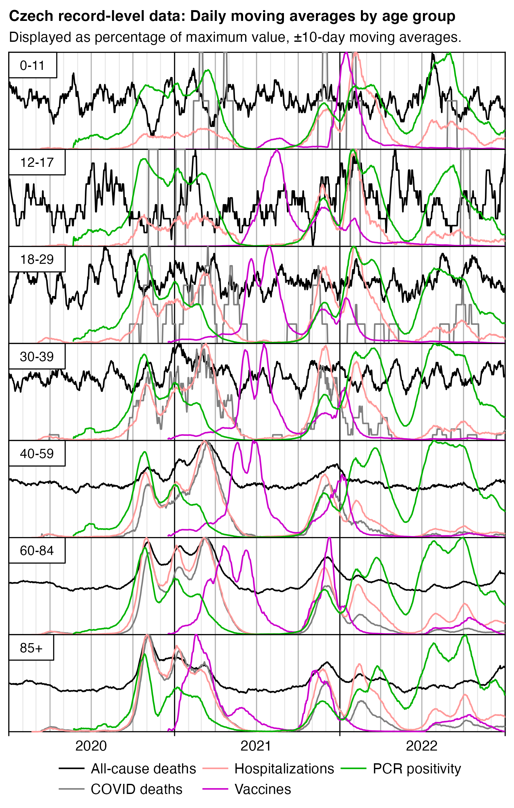
In January 2022 the percentage of vaccinated people was about 3% in ages 0-11 and about 43% in ages 12-15:
> b=fread("http://sars2.net/f/czbucketskeep.csv.gz")[dose<=1]
> agecut=\(x,ages=0:9*10)cut(pmax(x,0),c(ages,Inf),paste0(ages,c(paste0("-",ages[-1]-1),"+")),T,F)
> ages=c(0,12,16,18,30,40,60,85)
> b[month=="2022-01",.(alive=sum(alive)),.(age=agecut(age,ages),dose)][,.(vaxpct=round(sum(alive[dose==1])/sum(alive)*100)),age]|>print(r=F)
age vaxpct
0-11 3
12-15 43
16-17 62
18-29 68
30-39 64
40-59 74
60-84 85
85+ 82
In the United States the monthly number of COVID deaths also peaked in January 2022 in ages 0, 1-4, and 5-14:
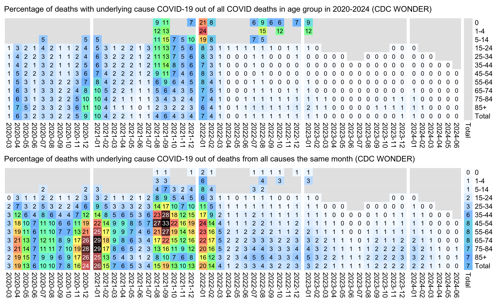
t=fread("http://sars2.net/f/wondercovidvsall.csv")[date>="2020-03"]
t[,age:=factor(age,unique(age)[order(as.numeric(unique(sub("[-+].*","",age))))])]
covidall=c(174,84,218,2375,10270,26510,64828,144336,231546,265489,267028)
t=rbind(t,t[,.(all=sum(all,na.rm=T),date="Total"),age][,covid:=covidall[age]])
#t=rbind(t,t[,.(covid=sum(covid,na.rm=T),all=sum(all,na.rm=T),date="Total"),age])
t=rbind(t,t[,.(covid=sum(covid,na.rm=T),all=sum(all,na.rm=T),age="Total"),date])
m=tapply(t$covid,t[,2:1],c);m=m/m[,ncol(m)]*100;m[,ncol(m)]=NA
m2=tapply(t$covid/t$all*100,t[,2:1],c)
maxcolor=30
pal=hsv(c(210,210,210,160,110,60,30,0,0,0)/360,c(0,.25,rep(.5,8)),c(rep(1,8),.5,0))
gap=c(seq(10,ncol(m),12),ncol(m)-1)
pheatmap::pheatmap(m,filename="i1.png",display_numbers=ifelse(is.na(m),"",round(m)),gaps_col=gap,
cluster_rows=F,cluster_cols=F,legend=F,cellwidth=11,cellheight=11,fontsize=9,fontsize_number=8,
border_color=NA,na_col="gray90",
number_color=ifelse(m>maxcolor*.8&!is.na(m),"white","black"),
breaks=seq(0,maxcolor,,256),colorRampPalette(pal)(256))
pheatmap::pheatmap(m2,filename="i2.png",display_numbers=ifelse(is.na(m2),"",round(m2)),gaps_col=gap,
cluster_rows=F,cluster_cols=F,legend=F,cellwidth=11,cellheight=11,fontsize=9,fontsize_number=8,
border_color=NA,na_col="gray90",
number_color=ifelse(m2>maxcolor*.8&!is.na(m2),"white","black"),
breaks=seq(0,maxcolor,,256),colorRampPalette(pal)(256))
system("w=`identify -format %w i1.png`;pad=44;convert -gravity northwest -pointsize 42 -font Arial \\( -splice x24 -size $[w-pad]x caption:'Percentage of deaths with underlying cause COVID-19 out of all COVID deaths in age group in 2020-2024 (CDC WONDER)' -extent $[w-pad]x -gravity center \\) i1.png -gravity northwest \\( -size $[w-40]x caption:'Percentage of deaths with underlying cause COVID-19 out of deaths from all causes the same month (CDC WONDER)' -extent $[w-pad]x -gravity center \\) i2.png -append 1.png")
When I pointed out to Kirsch that my ratio of Pfizer ASMR to Moderna ASMR fell below 1.0 in people who were vaccinated in October 2021, November 2021, and March 2022, he posted these replies: [https://x.com/stkirsch/status/1812183059405635603]
The problem is you don't have enough data even if you combined Oct, Nov, Dec to make meaningful comparisons:
Here's the chart for Oct - Dec injections. The most reliable datapoints (ages with the most moderna data on doses/deaths) are between age 72 and 80.
How do you explain the fact that the most reliable datapoints in your timeframe are above 1.2?
Among people who got the first dose in 2021Q4, there's a total of 625 deaths for Moderna and deaths 4339 for Pfizer, so I think the sample size is big enough:
> rec=fread("CR_records.csv")
> t=rec[!is.na(DatumUmrti)&Datum_1<=as.Date("2021-12-31")&Datum_1>=as.Date("2021-10-1"),.N,OckovaciLatka_1]
OckovaciLatka_1 N
1: Comirnaty 4339
2: COVID-19 Vaccine Janssen 1102
3: SPIKEVAX 625
4: VAXZEVRIA 1
Kirsch has been looking at age-specific mortality rates within age groups, but he can get a bigger sample size if he calculates ASMR for all ages combined together instead, or if he uses the method I demonstrated below which I think is more accurate than ASMR when there's a small sample size, and especially when there's an uneven distribution across age groups.
With ASMR if for example there is one age group that has 1 death and 100 person-days, and the age group makes up 5% of the standard population, the single death increases the total ASMR value by 18,250 deaths per 100,000 person-years (from 1/100*365e5*.05). Sometimes there's a cohort which mostly contains people from older age groups but which contains a handful of people from a younger age group, and if one of the younger people happens to die then it can artificially inflate the total ASMR value. But in the method below I calculate the ratio between actual deaths and expected deaths only after I have added together the deaths for all age groups, so it's a ratio of sums and not an average of ratios like ASMR, so it doesn't have the problem that the total ratio can be artificially inflated if the ratio for a single age group is inflated.
But anyway, for people who got the first dose in the fourth quarter of 2021, the method I used below gave me a Moderna-Pfizer ratio of only about 1.10 in ages 70-79, and the total ratio for all ages was about 1.02:
> b=fread("czbucketskeep.csv.gz")[dose<=1]
> q=(as.numeric(substr(b$vaxmonth,6,7))-1)%/%3+1
> b[,vaxq:=paste0(substr(vaxmonth,1,4),"Q",q)]
> b=b[,.(dead=sum(dead),alive=sum(alive)),.(vaxq,month,type,age=pmin(age,100))]
> b=merge(b,b[,.(base=sum(dead)/sum(alive)),.(month,age)])[,base:=base*alive]
> b=b[,.(dead=sum(dead),base=sum(base)),.(vaxq,type,age=factor(pmin(age,90)%/%10*10))]
> b=rbind(b,b[,.(dead=sum(dead),base=sum(base),age="Total"),.(vaxq,type)])
> b=rbind(b,b[,.(dead=sum(dead),base=sum(base),vaxq="Total"),.(age,type)])
> b=b[,.(rel=sum(dead)/sum(base),dead=sum(dead)),.(vaxq,type,age)]
> b=b[,.(rat=rel[type=="Moderna"]/rel[type=="Pfizer"]),.(vaxq,age)]
> tapply(rat$rat,rat[,-3],round,2)
vaxquarter 0 10 20 30 40 50 60 70 80 90 100 Total
2021Q1 NA 0.80 3.41 1.10 1.75 1.55 1.65 1.25 1.34 1.19 1.16 1.29
2021Q2 NA 0.00 0.88 1.63 1.64 1.77 1.56 1.25 1.19 1.10 1.50 1.43
2021Q3 NA 1.04 0.22 0.98 1.78 1.19 1.38 1.37 1.08 1.24 0.64 1.32
2021Q4 NA 1.80 1.56 0.86 0.66 0.97 0.98 1.10 1.00 1.00 1.33 1.02
2022Q1 NA 0.00 0.73 3.03 0.93 0.29 0.63 1.09 1.09 0.82 NA 0.92
2022Q2 NA NaN 0.00 NaN 0.00 0.00 0.00 0.00 0.00 NA NA 0.00
2022Q3 NA 0.00 0.00 NaN Inf 0.00 0.00 0.83 0.60 0.80 NA 0.78
2022Q4 NA NaN NaN NaN 0.00 0.00 NaN 0.00 0.00 25.15 NA 1.43
Total NA 1.09 1.36 1.39 1.59 1.59 1.57 1.23 1.31 1.17 1.14 1.32
In the plot below I calculated mortality relative to the baseline using the same method as in earlier sections of this HTML file, so that for each cell of the heatmap, I multiplied a vector of the number of person-days for each age by a vector of mortality rates the same month among each age in the total population that is included in the record-level data.
For example Moderna had 18019 actual deaths and about 18220.05 expected deaths, and Pfizer had 94068 actual deaths and about 125238.85 expected deaths, so I calculated the total Moderna-Pfizer ratio as (18019/18220.05)/(94068/125238.85), which is about 1.32.
The plot below shows that people who were vaccinated in January 2021 had a total Moderna-Pfizer ratio of about 2.3. However the ratio continued to remain high even in late 2022 which was almost two years after vaccination. But if the reason why the total Moderna-Pfizer ratio is above 1 is because Moderna vaccines killed more people like Kirsch is saying, then you'd expect the deaths to be concentrated in the weeks or months following vaccination when vaccine deaths are the most common, so that the ratio would get closer to zero over time and it wouldn't remain at a high level even two years after vaccination.
The plot also shows that people who got vaccinated in the fourth quarter of 2021 had a Moderna-Pfizer ratio close to 1.0, and the ratio continued to remain around the same level even a year later.
The Czech data seems to have some confounding factors which cause people who got the first dose in late 2021 to subsequently have much higher excess mortality than people who got the first dose around the rollout peak in May 2021. But in the same way there seem to be some confounding factors which cause the Moderna-Pfizer ratio to shift from about 1.58 in people vaccinated in May 2021 to around 1.00 in people who were vaccinated in the fourth quarter of 2021.
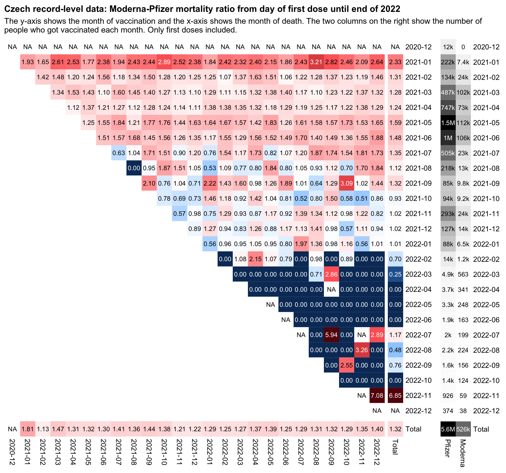
library(data.table)
ua=\(x,y,...){u=unique(x);y(u,...)[match(x,u)]}
kimi=\(x){e=floor(log10(ifelse(x==0,1,abs(x))));e2=pmax(e,0)%/%3+1
x[]=ifelse(abs(x)<10,round(x),paste0(round(x/1e3^(e2-1),ifelse(e%%3==0,1,0)),c("","k","M","B","T")[e2]));x}
buck=fread("http://sars2.net/f/czbucketskeep.csv.gz")[month>="2020-12"&dose<=1]
t=buck[,.(dead=sum(dead),alive=as.numeric(sum(alive))),.(age=pmin(age,100),month,vaxmonth,type)]
t=merge(t[type!=""],t[,.(base=sum(dead)/sum(alive)),.(age,month)])[,base:=base*alive]
t=rbind(t,t[,.(dead=sum(dead),alive=sum(alive),base=sum(base),month="Total"),.(age,vaxmonth,type)])
t=rbind(t,t[,.(dead=sum(dead),alive=sum(alive),base=sum(base),vaxmonth="Total"),.(age,month,type)])
a=t[,.(rat=sum(dead)/sum(base),alive=sum(alive)),.(month=factor(month),vaxmonth=factor(vaxmonth),type)]
m1=a[type=="Moderna",tapply(rat,list(vaxmonth,month),c)]
m2=a[type=="Pfizer",tapply(rat,list(vaxmonth,month),c)]
m=(m1-m2)/ifelse(m1>m2,m2,m1)
disp=m1/m2;disp=ifelse(disp>=10,sprintf("%.1f",disp),sprintf("%.2f",disp))
disp[lower.tri(disp)&row(disp)!=nrow(disp)]=""
exp=.9;m=abs(m)^exp*sign(m)
maxcolor=4^exp;m[is.infinite(m)]=-maxcolor
pheatmap::pheatmap(m,filename="mort.png",display_numbers=disp,
gaps_col=ncol(m)-1,gaps_row=nrow(m)-1,cluster_rows=F,cluster_cols=F,legend=F,
cellwidth=19,cellheight=19,fontsize=9,fontsize_number=8,border_color=NA,na_col="white",
number_color=ifelse(!is.na(m)&abs(m)>.5*maxcolor,"white","black"),
breaks=seq(-maxcolor,maxcolor,,256),
colorRampPalette(hsv(rep(c(7/12,0),4:5),c(.9,.75,.6,.3,0,.3,.6,.75,.9),c(.4,.65,1,1,1,1,1,.65,.4)))(256))
rec=fread("Czech/data/CR_records.csv",showProgress=F)
pop=rec[,.N,.(month=ua(Datum_1,substr,1,7),type=OckovaciLatka_1)]
pop=rbind(pop,pop[,.(N=sum(N),month="Total"),type])
pop=xtabs(N~month+type,pop)[levels(a$vaxmonth),c("Comirnaty","SPIKEVAX")];colnames(pop)=c("Pfizer","Moderna")
exp2=.6;maxcolor2=max(pop[-nrow(pop),])
pheatmap::pheatmap(pop^exp2,filename="pop.png",display_numbers=kimi(pop),
gaps_row=nrow(m)-1,cluster_rows=F,cluster_cols=F,legend=F,
cellwidth=19,cellheight=19,fontsize=9,fontsize_number=8,border_color=NA,na_col="white",
number_color=ifelse(pop^exp2>maxcolor2^exp2*.45,"white","black"),
breaks=seq(0,maxcolor2^exp2,,256),sapply(seq(1,0,,256),\(i)rgb(i,i,i)))
system("convert {mort,pop}.png +append 0.png;w=`identify -format %w 0.png`;pad=48;convert \\( -pointsize 46 -font Arial-Bold -size $[w-pad]x caption:'Czech record-level data: Moderna-Pfizer mortality ratio from day of first dose until end of 2022' \\( -gravity northwest -splice x12 -pointsize 42 -font Arial -interline-spacing -2 caption:'The y-axis shows the month of vaccination and the x-axis shows the month of death. The two columns on the right show the number of people who got vaccinated each month. Only first doses included. Pfizer vaccines only include vaccines with type string \"Comirnaty\" and not Pfizer'\\''s Omicron or pediatric vaccine types.' \\) -extent $[w-pad]x -gravity center \\) \\( -gravity north 0.png -shave x6 \\) -append -gravity north -splice x20 1.png")
The plot below shows that around March 2021 and November-December 2021, unvaccinated people had large spikes in ASMR which coincided with spikes in PCR positivity rate, hospitalizations, COVID deaths, and COVID cases. But in vaccinated people the two spikes were in ASMR much smaller, even though in the case of the first spike around March 2021, it's probably at least partially because there were many recently vaccinated people who had a temporarily lowered mortality rate because of the healthy vaccine effect.
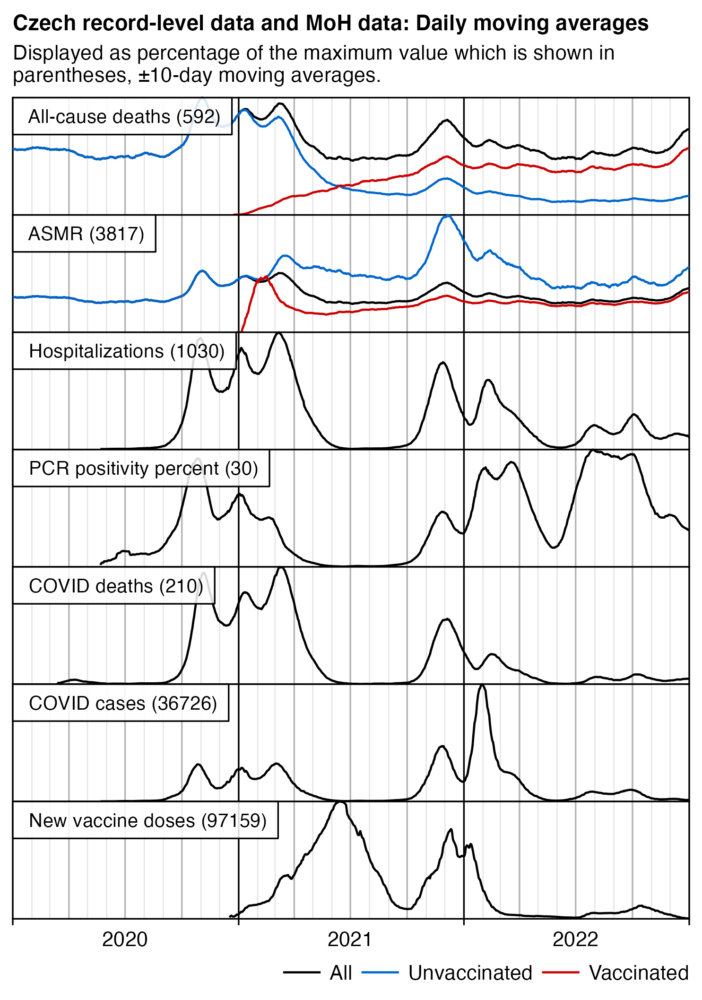
# download.file("https://onemocneni-aktualne.mzcr.cz/api/v2/covid-19/nakazeni-hospitalizace-testy.csv","nakazeni-hospitalizace-testy.csv")
# download.file("http://sars2.net/f/czbucketsdaily.csv.gz","czbucketsdaily.csv.gz")
# download.file("https://onemocneni-aktualne.mzcr.cz/api/v2/covid-19/umrti.csv","umrti.csv")
library(data.table);library(ggplot2)
ma=\(x,b=1,f=b)setNames(rowMeans(embed(c(rep(NA,b),x,rep(NA,f)),f+b+1),na.rm=T),names(x))
ua=\(x,y,...){u=unique(x);y(u,...)[match(x,u)]}
age=\(x,y){x=as.numeric(x);y=as.numeric(y);(y-x-(y-789)%/%1461+(x-789)%/%1461)%/%365}
xstart=as.Date("2020-01-01");xend=as.Date("2023-1-1")
xbreak=seq(xstart,xend,"6 month");xlab=c(rbind("",2020:2022),"")
rec=fread("Czech/data/CR_records.csv",showProgress=F)
p=rec[!is.na(DatumUmrti),.(dead=.N),.(date=DatumUmrti,type=as.numeric(!is.na(Datum_1))+1)]
p=rbind(p,p[,.(dead=sum(dead),type=0),date])
p=dcast(p,date~paste0("dead",type),value.var="dead")
k=grep("Datum_",names(rec))
p=merge(p,data.table(date=as.IDate(unlist(rec[,..k],use.names=F)))[!is.na(date)][,.(vax=.N),date],all=T)
std=fread("http://sars2.net/f/czcensus2021pop.csv")$pop
buck=fread("czbucketsdaily.csv.gz")
buck=rbind(buck,cbind(expand.grid(date=as.IDate(xstart:xend),age=0:100,dose=unique(buck$dose)),alive=0,dead=0))|>unique(by=1:3)
asmrtot=buck[,.(dead=sum(dead),alive=sum(alive),type=0),.(date,age)][alive>=1e3]
asmr=rbind(asmrtot,buck[,.(dead=sum(dead),alive=sum(alive)),.(date,age,type=as.integer(dose>=1)+1)])
asmr=asmr[alive>=1e3,.(asmr=sum(dead/alive*std[pmin(age,100)+1]/sum(std)*365e5)),.(date,type)]
p=merge(p,dcast(asmr,date~paste0("asmr",type),value.var="asmr"))
pop=buck[,.(pop=sum(alive)),.(date,type=as.integer(dose>1)+1)]
pop=rbind(pop,pop[,.(pop=sum(pop),type=0),date])
p=merge(p,dcast(pop,date~paste0("pop",type),value.var="pop"),all=T)
testy=fread("nakazeni-hospitalizace-testy.csv",na.strings="-")
testy=testy[,.(tests=sum(provedene_testy,na.rm=T),cases=sum(potvrzene_pripady,na.rm=T),hosp=sum(nove_hospitalizace,na.rm=T)),.(date=datum)]
p=merge(p,testy[tests>0,.(date,pcr=cases/tests*100,hosp,cases)],all=T)
p=merge(p,fread("umrti.csv")[,.(coviddead=.N),.(date=datum)],all=T)
p=p[date%in%xstart:xend]
p$dead[is.na(p$dead)]=0
p$coviddead[is.na(p$coviddead)&p$date>p$date[!is.na(p$coviddead)][1]]=0
p$vax[is.na(p$vax)&p$date>p$date[!is.na(p$vax)][1]]=0
p$hosp[is.na(p$hosp)&p$date>p$date[!is.na(p$hosp)][1]]=0
var=read.csv(row.names=1,text="group,group2
pop0,Population size of record-level data,All
pop1,Population size of record-level data,Unvaccinated
pop2,Population size of record-level data,Vaccinated
dead0,All-cause deaths,All
dead1,All-cause deaths,Unvaccinated
dead2,All-cause deaths,Vaccinated
asmr0,ASMR,All
asmr1,ASMR,Unvaccinated
asmr2,ASMR,Vaccinated
hosp,Hospitalizations,All
pcr,PCR positivity percent,All
coviddead,COVID deaths,All
cases,COVID cases,All
vax,New vaccine doses,All")
var$group=factor(var$group,unique(var$group))
var$group2=factor(var$group2,unique(var$group2))
keep=c("dead0","dead1","dead2","asmr0","asmr1","asmr2","vax","coviddead","hosp","cases","pcr")
long=cbind(p[,1:2],y=unlist(p[,..keep],,F),z=factor(rep(keep,each=nrow(p)),keep))
long[,mav:=ma(y,10),z]
long[,group:=var[levels(z)[z],]$group]
long[,group2:=var[levels(z)[z],]$group2]
max=long[,.(max=max(mav,na.rm=T)),group]
long=merge(long,max)
color=c("black",hsv(c(7,0)/12,1,.8))
ggplot(long,aes(x=date))+
facet_wrap(~group,ncol=1,strip.position="top")+
geom_vline(xintercept=seq(xstart,xend,"month"),linewidth=.2,color="gray90")+
geom_vline(xintercept=seq(xstart,xend,"3 month"),linewidth=.25,color="gray70")+
geom_vline(xintercept=seq(xstart,xend,"year"),linewidth=.25,lineend="square")+
geom_hline(yintercept=0:1,linewidth=.25,lineend="square")+
geom_line(aes(y=mav/max,color=group2),linewidth=.35)+
geom_label(data=max,aes(label=sprintf("\n %s (%.0f) \n",group,max)),x=xstart,y=1,lineheight=.5,hjust=0,vjust=1,size=2.3,fill=alpha("white",.85),label.r=unit(0,"lines"),label.padding=unit(0,"lines"),label.size=.25)+
labs(x=NULL,y=NULL,title="Czech record-level data and MoH data: Daily moving averages",subtitle="Displayed as percentage of the maximum value which is shown in parentheses, ±10-day moving averages."|>stringr::str_wrap(70))+
scale_x_date(limits=c(xstart,xend),breaks=xbreak,labels=xlab)+
scale_y_continuous(limits=0:1)+
scale_color_manual(values=color)+
coord_cartesian(clip="off",expand=F)+
guides(color=guide_legend(nrow=1,byrow=F))+
theme(axis.text=element_text(size=7,color="black"),
axis.text.y=element_blank(),
axis.ticks=element_blank(),
axis.ticks.x=element_line(color=alpha("black",c(1,0)),linewidth=.25),
axis.ticks.length=unit(0,"lines"),
axis.ticks.length.x=unit(.15,"lines"),
legend.background=element_blank(),
legend.box.spacing=unit(0,"pt"),
legend.direction="horizontal",
legend.justification=c(1,.5),
legend.key.height=unit(.7,"lines"),
legend.key.width=unit(1.1,"lines"),
legend.key=element_rect(fill=alpha("white",0)),
legend.margin=margin(.15,0,0,0,"lines"),
legend.position="bottom",
legend.spacing.x=unit(.1,"lines"),
legend.text=element_text(size=7,vjust=.5),
legend.title=element_blank(),
panel.spacing=unit(0,"lines"),
panel.background=element_rect(fill="white"),
panel.grid=element_blank(),
plot.margin=margin(.3,.3,.3,.3,"lines"),
plot.subtitle=element_text(size=7,margin=margin(0,0,.6,0,"lines")),
plot.title=element_text(size=7.3,face="bold",margin=margin(.1,0,.5,0,"lines")),
strip.background=element_blank(),
strip.text=element_blank())
ggsave("1.png",width=3.3,height=4.7,dpi=450)
qp()